Django3.2¶
一、Django环境安装¶
1.1、Django下载¶
Python下有许多款不同的 Web 框架。Django是重量级选手中最有代表性的一位。许多成功的网站和APP都基于Django。Django 是一个开放源代码的 Web 应用框架，由 Python 写成。Django 遵守 BSD 版权，初次发布于 2005 年 7 月, 并于 2008 年 9 月发布了第一个正式版本 1.0 。Django 采用了 MVT 的软件设计模式，即模型（Model），视图（View）和模板（Template）。
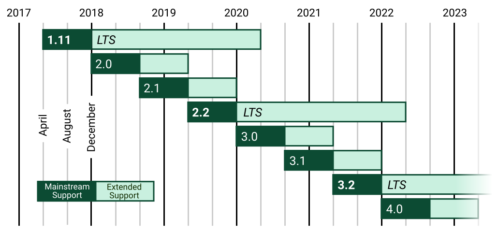
目前我们学习和使用的版本是3.2LTS版本
目前开源软件发布一般会有2个不同的分支版本:
1. 普通发行版本: 经常用于一些新功能,新特性,但是维护周期短,不稳定.
2. 长线支持版本[LongTerm Supper]: 维护周期长,稳定
软件版本格式: 大版本.小版本.修订号
大版本一般是项目内容/软件的核心架构发生改动, 以前的代码已经不适用于新的版本
小版本一般是功能的删减, 删一个功能,小版本+1, 减一个功能,小版本+1
修订号一般就是原来的代码出现了bug, 会针对bug代码进行修复, 此时就会增加修订号的数值
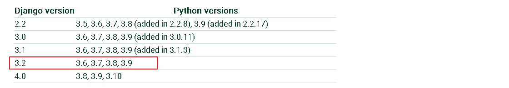
官网: http://www.djangoproject.com
文档:https://docs.djangoproject.com/zh-hans/3.2/
在本地安装
pip源:
https://pypi.douban.com/simple/ 豆瓣源
https://pypi.tuna.tsinghua.edu.cn/simple 清华源
使用格式:
pip install django -i https://pypi.douban.com/simple/
当然在以后开发或者学习中,我们肯定都会遇到在一台开发机子中,运行多个项目的情况,有时候还会出现每个项目的python解析器或者依赖包的版本有差异.
1.2、MTV模型¶
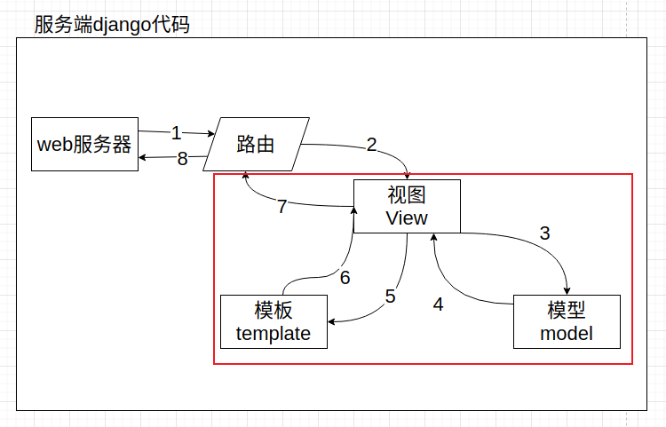
这个MVT模式并非django首创，在其他的语言里面也有类似的设计模式MVC，甚至可以说django里面的MVT事实上是借鉴了MVC模式衍生出来的。
M，Model，模型，是一个类或者函数，里面的代码就是用于完成操作数据库的。
V，View，视图，里面的代码就是用于展示给客户端的页面效果。可以是一个具有特殊语法的HTML文件，也可以是一个数据结构。
C，Controller，控制器，是一个类或者函数，里面的代码就是用于项目功能逻辑的，一般用于调用模型来获取数据，获取到的数据通过调用视图文件返回给客户端。
二、创建django项目并运行¶
创建虚拟环境并在虚拟环境中下载安装django包
pip install django==3.2 -i https://pypi.douban.com/simple/
cd ~/Desktop
django-admin startproject demo
完成了以后,直接直接下pycharm下面的终端terminal中使用命令运行django
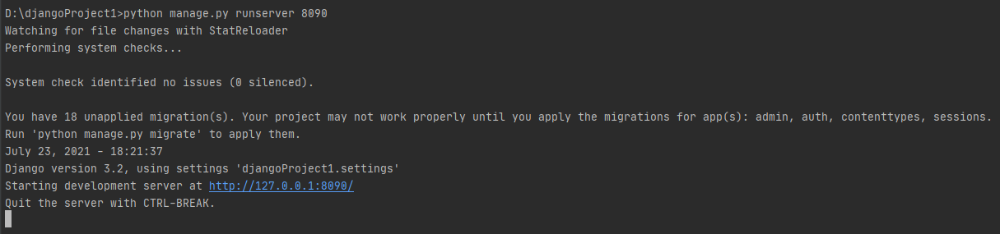
在浏览器中访问显示的地址http://127.0.0.1:8090.效果如下则表示正确安装了.
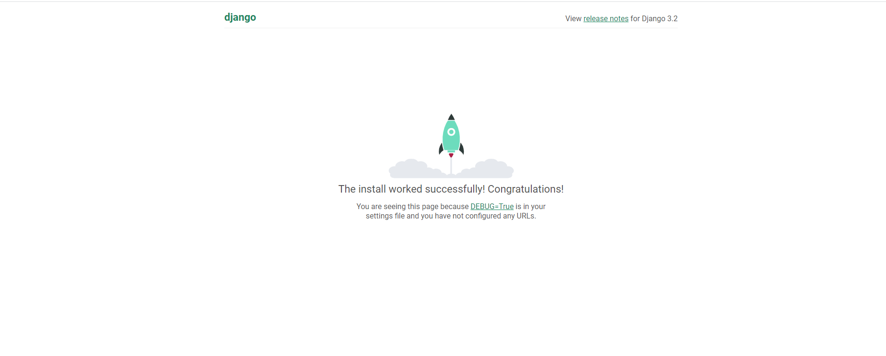
当然如果每次运行项目都要在终端下输入命令的话,很麻烦,这时候我们可以借助pycharm直接自动运行这段命令.当然,这个需要我们在pycharm配置一下的.
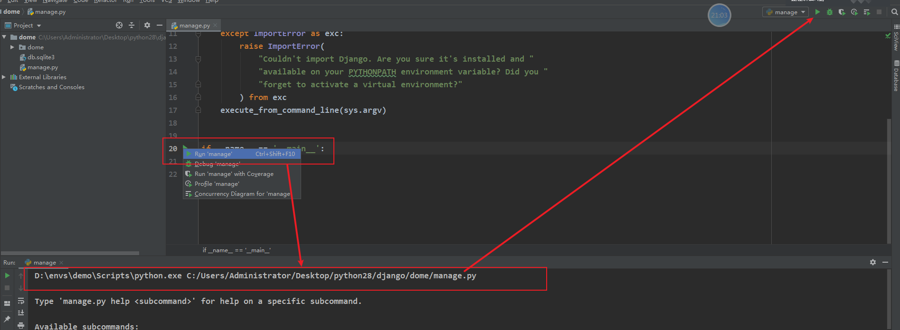
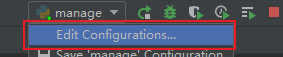
(小三角形)可以在runserver 参数后配置修改django监听的端口和IP地址,当然,只能是127.0.0.1对应的其他地址.不能是任意IP.否则无法运行或访问!!
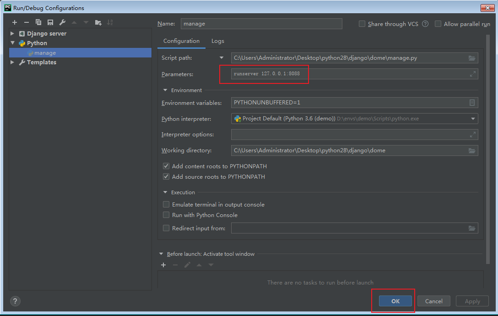
2.1、目录结构¶
│─ manage.py # 终端脚本命令,提供了一系列用于生成文件或者目录的命令,也叫脚手架
└─ dome/ # 主应用开发目录,保存了项目中的所有开发人员编写的代码, 目录是生成项目时指定的
│- asgi.py # django3.0以后新增的，用于让django运行在异步编程模式的一个web应用对象
│- settings.py # 默认开发配置文件
│- urls.py # 路由列表目录,用于绑定视图和url的映射关系
│- wsgi.py # wsgi就是项目运行在wsgi服务器时的入口文件,相当于manage.py
└- __init__.py
2.2、快速使用django¶
在django中要提供数据展示给用户,我们需要完成3个步骤.
需求：利用Django实现一个查看当前时间的web页面。
基于MTV模型，设计步骤如下：
- step1：在urls.py中设计url与视图的映射关系。
- step2：创建子应用，在views.py中构建视图函数。
- step3：将变量嵌入到模板中返回客户端。
（1）创建子应用¶
子应用的名称将来会作为目录名而存在,所以不能出现特殊符号,不能出现中文等多字节的字符.
（2） 绑定路由¶
demo/urls.py代码:
from django.contrib import admin
from django.urls import path
from home.views import index
urlpatterns = [
path('admin/', admin.site.urls),
path("timer", timer),
]
（3）在子应用的视图文件中编写视图函数¶
home/view.py,代码:
from django.shortcuts import render,HttpResponse
# Create your views here.
import datetime
def timer(request):
now=datetime.datetime.now().strftime("%Y-%m-%d %X")
#return HttpResponse(now)
return render(request,"timer.html",{"now":now})
（4）在templates中构建模板：timer.html:¶
<!DOCTYPE html>
<html lang="en">
<head>
<meta charset="UTF-8">
<title>Title</title>
</head>
<body>
<p>当前时间:{{ now }}</p>
</body>
</html>
因为上面我们绑定index视图函数的url地址是index,所以我们可以通过http://127.0.0.1:8000/拼接url地址index来访问视图函数
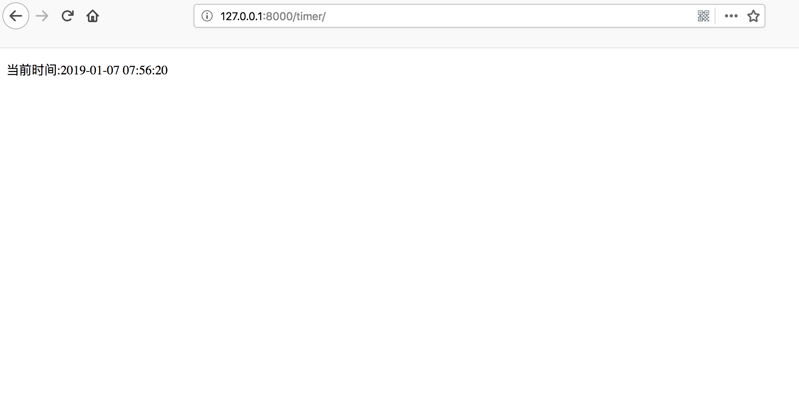
三、路由控制器¶
Route路由, 是一种映射关系！路由是把客户端请求的url地址和用户请求的应用程序[这里意指django里面的视图进行一对一绑定映射的一种关系。
在django中所有的路由最终都被保存到一个变量 urlpatterns., urlpatterns必须声明在主应用下的urls.py总路由中。这是由配置文件settings设置的。
在django运行中，当客户端发送了一个http请求到服务端，服务端的web服务器则会从http协议中提取url地址, 从程序内部找到项目中添加到urlpatterns里面的所有路由信息的url进行遍历匹配。如果相等或者匹配成功，则调用当前url对象的视图方法。
在给urlpatterns路由列表添加路由的过程中,django一共提供了2个函数给开发者注册路由.
from django.urls import path # 字符串路由
from django.urls import re_path # 正则路由，会把url地址看成一个正则模式与客户端的请求url地址进行正则匹配
# path和re_path 使用参数一致.仅仅在url参数和接收参数时写法不一样
（1）基本使用¶
path(r'^articles/2003/$', views.special_case_2003),
re_path(r'^articles/([0-9]{4})/$', views.year_archive),
re_path(r'^articles/([0-9]{4})/([0-9]{2})/$', views.month_archive),
re_path(r'^articles/(?P<year>[0-9]{4})/(?P<month>[0-9]{2})/$', views.month_archive2),
（2）路由分发¶
1. Import the include() function: from django.urls import include, path
2. Add a URL to urlpatterns: path('blog/', include('blog.urls'))
四、视图¶
django的视图主要有2种,分别是函数视图和类视图.现在刚开始学习django,我们先学习函数视图(FBV),后面再学习类视图[CBV].
4.1、请求方式¶
web项目运行在http协议下,默认肯定也支持用户通过不同的http请求发送数据来.
django支持让客户端只能通过指定的Http请求来访问到项目的视图
home/views.py,代码:
# 让用户发送POST才能访问的内容
from django.views.decorators.http import require_http_methods
@require_http_methods(["POST"])
def login(request):
return HttpResponse("登录成功！")
路由绑定，demo/urls.py,代码:
from django.contrib import admin
from django.urls import path
from home.views import index
urlpatterns = [
path('admin/', admin.site.urls),
path("index", index),
path("login", login),
]
通过浏览器，访问效果http://127.0.0.1:8090/login:
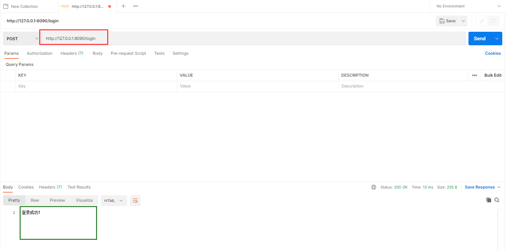
4.2、请求对象¶
django将请求报文中的请求行、首部信息、内容主体封装成 HttpRequest 类中的属性。 除了特殊说明的之外，其他均为只读的。
（1）请求方式¶
（2）请求数据¶
# 1.HttpRequest.GET:一个类似于字典的对象，包含 HTTP GET 的所有参数。详情请参考 QueryDict 对象。
# 2.HttpRequest.POST:一个类似于字典的对象，如果请求中包含表单数据，则将这些数据封装成 QueryDict 对象。
# 注意：键值对的值是多个的时候,比如checkbox类型的input标签，select标签，需要用： request.POST.getlist("hobby")
# 3.HttpRequest.body:一个字符串，代表请求报文的请求体的原数据。
（3）请求路径¶
（4）请求头¶
4.3、响应对象¶
响应对象主要有三种形式：
- HttpResponse()
- render()
- redirect()
（1）render()¶
参数：
/*
request： 用于生成响应的请求对象。
template_name：要使用的模板的完整名称，可选的参数
context：添加到模板上下文的一个字典,
默认是一个空字典。如果字典中的某个值是可调用的，视图将在渲染模板之前调用它。
*/
render方法就是将一个模板页面中的模板语法进行渲染，最终渲染成一个html页面作为响应体。
（2）redirect方法¶
当您使用Django框架构建Python Web应用程序时，您在某些时候必须将用户从一个URL重定向到另一个URL，
通过redirect方法实现重定向。
参数可以是:
- 一个绝对的或相对的URL, 将原封不动的作为重定向的位置.
- 一个url的别名: 可以使用reverse来反向解析url
传递要重定向到的一个具体的网址
当然也可以是一个完整的网址
传递一个视图的名称
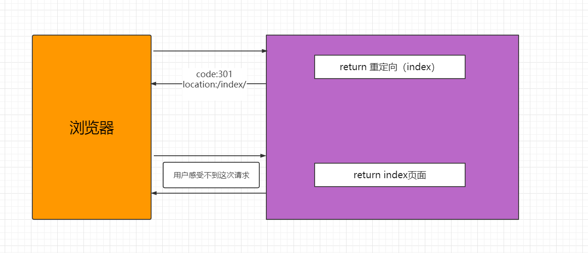
五、模板语法¶
模板引擎是一种可以让开发者把服务端数据填充到html网页中完成渲染效果的技术。它实现了把前端代码和服务端代码分离的作用，让项目中的业务逻辑代码和数据表现代码分离，让前端开发者和服务端开发者可以更好的完成协同开发。
Django框架中内置了web开发领域非常出名的一个DjangoTemplate模板引擎（DTL）。DTL官方文档
要在django框架中使用模板引擎把视图中的数据更好的展示给客户端，需要完成3个步骤：
在项目配置文件中指定保存模板文件的模板目录。一般模板目录都是设置在项目根目录或者主应用目录下。
在视图中基于django提供的渲染函数绑定模板文件和需要展示的数据变量
在模板目录下创建对应的模板文件，并根据模板引擎内置的模板语法，填写输出视图传递过来的数据。
配置模板目录：在当前项目根目录下创建了模板目录templates. 然后在settings.py, 模板相关配置，找到TEMPLATES配置项，填写DIRS设置模板目录。
# 模板引擎配置
TEMPLATES = [
{
'BACKEND': 'django.template.backends.django.DjangoTemplates',
'DIRS': [
BASE_DIR / "templates", # 路径拼接
],
'APP_DIRS': True,
'OPTIONS': {
'context_processors': [
'django.template.context_processors.debug',
'django.template.context_processors.request',
'django.contrib.auth.context_processors.auth',
'django.contrib.messages.context_processors.messages',
],
},
},
]
5.1、简单案例¶
为了方便接下里的演示内容，我这里创建创建一个新的子应用tem
settings.py，注册子应用，代码：
INSTALLED_APPS = [
'django.contrib.admin',
'django.contrib.auth',
'django.contrib.contenttypes',
'django.contrib.sessions',
'django.contrib.messages',
'django.contrib.staticfiles',
'tem', # 开发者创建的子应用，这填写就是子应用的导包路径
]
总路由加载子应用路由,urls.py，代码：
from django.contrib import admin
from django.urls import path,include
urlpatterns = [
path('admin/', admin.site.urls),
# path("路由前缀/", include("子应用目录名.路由模块"))
path("book/", include("home.urls")),
path("student/", include("demo.students.urls",namespace="stu")),
path("users/", include("users.urls")),
path("tem/", include("tem.urls")),
]
在子应用目录下创建urls.py子路由文件，代码如下：
"""子应用路由"""
from django.urls import path, re_path
from . import views
urlpatterns = [
path("index", views.index),
]
tem.views.index，代码：
from django.shortcuts import render
def index(request):
# 要显示到客户端的数据
name = "hello DTL!"
# return render(request, "模板文件路径",context={字典格式：要在客户端中展示的数据})
return render(request, "index.html",context={"name":name})
templates.index.html，代码：
<!DOCTYPE html>
<html lang="en">
<head>
<meta charset="UTF-8">
<title>Title</title>
</head>
<body>
<h1>来自模板的内容</h1>
<p>输出变量name的值：{{ name }}</p>
</body>
</html>
5.2、render函数内部本质¶
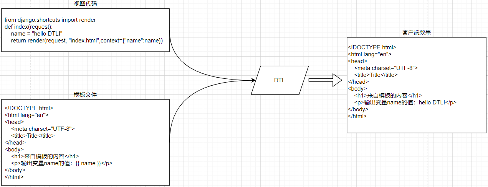
from django.shortcuts import render
from django.template.loader import get_template
from django.http.response import HttpResponse
def index(request):
name = "hello world!"
# 1. 初始化模板,读取模板内容,实例化模板对象
# get_template会从项目配置中找到模板目录，我们需要填写的参数就是补全模板文件的路径
template = get_template("index.html")
# 2. 识别context内容, 和模板内容里面的标记[标签]替换,针对复杂的内容,进行正则的替换
context = {"name": name}
content = template.render(context, request) # render中完成了变量替换成变量值的过程，这个过程使用了正则。
print(content)
# 3. 通过response响应对象,把替换了数据的模板内容返回给客户端
return HttpResponse(content)
# 上面代码的简写,直接使用 django.shortcuts.render
# return render(request, "index.html",context={"name":name})
# return render(request,"index3.html", locals())
# data = {}
# data["name"] = "xiaoming"
# data["message"] = "你好！"
# return render(request,"index3.html", data)
- DTL模板文件与普通html文件的区别在哪里？
- DTL模板文件是一种带有特殊语法的HTML文件，这个HTML文件可以被Django编译，可以传递参数进去，实现数据动态化。在编译完成后，生成一个普通的HTML文件，然后发送给客户端。
- 开发中，我们一般把开发中的文件分2种，分别是静态文件和动态文件。
5.3、模板语法¶
5.3.1、变量渲染之深度查询¶
def index(request):
name = "root"
age = 13
sex = True
lve = ["swimming", "shopping", "coding", "game"]
bookinfo = {"id": 1, "price": 9.90, "name": "python3天入门到挣扎", }
book_list = [
{"id": 10, "price": 9.90, "name": "python3天入门到挣扎", },
{"id": 11, "price": 19.90, "name": "python7天入门到垂死挣扎", },
]
return render(request, 'index.html', locals())
模板代码，templates/index.html：
<!DOCTYPE html>
<html lang="en">
<head>
<meta charset="UTF-8">
<title>Title</title>
</head>
<body>
<p>name={{ name }}</p>
<p>{{ age }}</p>
<p>{{ sex }}</p>
<p>列表成员</p>
<p>{{ lve }}</p>
<p>{{ lve.0 }}</p>
<p>{{ lve | last }}</p>
<p>字典成员</p>
<p>id={{ bookinfo.id }}</p>
<p>price={{ bookinfo.price }}</p>
<p>name={{ bookinfo.name }}</p>
<p>复杂列表</p>
<p>{{ book_list.0.name }}</p>
<p>{{ book_list.1.name }}</p>
</body>
</html>
通过句点符号深度查询
tem.urls，代码：
"""子应用路由"""
from django.urls import path, re_path
from . import views
urlpatterns = [
# ....
path("index", views.index),
]
5.3.2、变量渲染之内置过滤器¶
语法：
内置过滤器
| 过滤器 | 用法 | 代码 |
|---|---|---|
| last | 获取列表/元组的最后一个成员 | {{liast | last}} |
| first | 获取列表/元组的第一个成员 | {{list|first}} |
| length | 获取数据的长度 | {{list | length}} |
| defualt | 当变量没有值的情况下, 系统输出默认值, | {{str|default="默认值"}} |
| safe | 让系统不要对内容中的html代码进行实体转义 | {{htmlcontent| safe}} |
| upper | 字母转换成大写 | {{str | upper}} |
| lower | 字母转换成小写 | {{str | lower}} |
| title | 每个单词首字母转换成大写 | {{str | title}} |
| date | 日期时间格式转换 | {{ value| date:"D d M Y" }} |
cut |
从内容中截取掉同样字符的内容 | {{content | cut:"hello"}} |
| list | 把内容转换成列表格式 | {{content | list}} |
escape |
把内容中的HTML特殊符号转换成实体字符 | {{content | escape }} |
| filesizeformat | 把文件大小的数值转换成单位表示 | {{filesize | filesizeformat}} |
join |
按指定字符拼接内容 | {{list| join("-")}} |
random |
随机提取某个成员 | {list | random}} |
slice |
按切片提取成员 | {{list | slice:":-2"}} |
truncatechars |
按字符长度截取内容 | {{content | truncatechars:30}} |
truncatewords |
按单词长度截取内容 | 同上 |
过滤器的使用
视图代码 home.views.py;
def index(request):
"""过滤器 filters"""
content = "<a href='http://www.luffycity.com'>路飞学城</a>"
# content1 = '<script>alert(1);</script>'
from datetime import datetime
now = datetime.now()
content2= "hello wrold!"
return render(request,"index.html",locals())
# 模板代码,templates/index.html:
{{ content | safe }}
{{ content1 | safe }}
{# 过滤器本质就是函数,但是模板语法不支持小括号调用,所以需要使用:号分割参数 #}
<p>{{ now | date:"Y-m-d H:i:s" }}</p>
<p>{{ conten1 | default:"默认值" }}</p>
{# 一个数据可以连续调用多个过滤器 #}
<p>{{ content2 | truncatechars:6 | upper }}</p>
5.3.3、自定义过滤器¶
虽然官方已经提供了许多内置的过滤器给开发者,但是很明显,还是会有存在不足的时候。例如:希望输出用户的手机号码时,
13912345678 ---->> 139*****678，这时我们就需要自定义过滤器。
要声明自定义过滤器并且能在模板中正常使用,需要完成2个前置的工作:
# 1. 当前使用和声明过滤器的子应用必须在setting.py配置文件中的INSTALLED_APPS中注册了!!!
INSTALLED_APPS = [
'django.contrib.admin',
'django.contrib.auth',
'django.contrib.contenttypes',
'django.contrib.sessions',
'django.contrib.messages',
'django.contrib.staticfiles',
'home',
]
# 2. 自定义过滤器函数必须被 template.register进行装饰使用.
# 而且过滤器函数所在的模块必须在templatetags包里面保存
# 在home子应用下创建templatetags包[必须包含__init__.py], 在包目录下创建任意py文件
# home.templatetags.my_filters.py代码:
from django import template
register = template.Library()
# 自定义过滤器
@register.filter("mobile")
def mobile(content):
return content[:3]+"*****"+content[-3:]
# 3. 在需要使用的模板文件中顶部使用load标签加载过滤器文件my_filters.py并调用自定义过滤器
# home.views.py,代码:
def index(request):
"""自定义过滤器 filters"""
moblie_number = "13312345678"
return render(request,"index2.html",locals())
# templates/index2.html,代码:
{% load my_filters %}
<!DOCTYPE html>
<html lang="en">
<head>
<meta charset="UTF-8">
<title>Title</title>
</head>
<body>
{{ moblie_number| mobile }}
</body>
</html>
5.3.4、标签¶
（1）if 标签¶
视图代码,tem.views.py:
def index(request):
name = "xiaoming"
age = 19
sex = True
lve = ["swimming", "shopping", "coding", "game"]
user_lve = "sleep"
bookinfo = {"id": 1, "price": 9.90, "name": "python3天入门到挣扎", }
book_list = [
{"id": 10, "price": 9.90, "name": "python3天入门到挣扎", },
{"id": 11, "price": 19.90, "name": "python7天入门到垂死挣扎", },
]
return render(request, 'index.html', locals())
模板代码,templates/index.html，代码：
<!DOCTYPE html>
<html lang="en">
<head>
<meta charset="UTF-8">
<title>Title</title>
</head>
<body>
{# 来自django模板引擎的注释~~~~ #}
{% comment %}
多行注释，comment中的所有内容全部都不会被显示出去
{% endcomment %}
{# {% if age < 18 %}#}
{# <p>你还没成年，不能访问我的网站！</p>#}
{# {% endif %}#}
{##}
{# {% if name == "root" %}#}
{# <p>超级用户，欢迎回家！</p>#}
{# {% else %}#}
{# <p>{{ name }},你好，欢迎来到xx网站！</p>#}
{# {% endif %}#}
{% if user_lve == lve.0 %}
<p>那么巧，你喜欢游泳，海里也能见到你~</p>
{% elif user_lve == lve.1 %}
<p>那么巧，你也来收快递呀？~</p>
{% elif user_lve == lve.2 %}
<p>那么巧，你也在老男孩？</p>
{% else %}
<p>看来我们没有缘分~</p>
{% endif %}
</body>
</html>
路由代码：
"""子应用路由"""
from django.urls import path, re_path
from . import views
urlpatterns = [
# ....
path("index", views.index),
]
（2）for标签¶
视图代码, home.views.py:
def index7(request):
book_list1 = [
{"id": 11, "name": "python基础入门", "price": 130.00},
{"id": 17, "name": "Go基础入门", "price": 230.00},
{"id": 23, "name": "PHP基础入门", "price": 330.00},
{"id": 44, "name": "Java基础入门", "price": 730.00},
{"id": 51, "name": "C++基础入门", "price": 300.00},
{"id": 56, "name": "C#基础入门", "price": 100.00},
{"id": 57, "name": "前段基础入门", "price": 380.00},
]
return render(request, 'index.html', locals())
template/index.html，代码：
<!DOCTYPE html>
<html lang="en">
<head>
<meta charset="UTF-8">
<title>Title</title>
</head>
<body>
<table width="800" align="center" border="1">
<tr>
<td>序号</td>
<td>id</td>
<td>标题</td>
<td>价格</td>
</tr>
{# 多行编辑，alt+鼠标键，alt不要松开，左键点击要编辑的每一行 #}
{# {% for book in book_list1 %}#}
{# <tr>#}
{# <td>{{ book.id }}</td>#}
{# <td>{{ book.name }}</td>#}
{# <td>{{ book.price }}</td>#}
{# </tr>#}
{# {% endfor %}#}
{# 建议不要直接使用for循环一维字典，此处使用仅仅展示for嵌套for而已 #}
{# {% for book in book_list1 %}#}
{# <tr>#}
{# {% for field,value in book.items %}#}
{# <td>{{ field }} == {{ value }}</td>#}
{# {% endfor %}#}
{# </tr>#}
{# {% endfor %}#}
{# {% for book in book_list1 %}#}
{# <tr>#}
{# <td>{{ book.id }}</td>#}
{# <td>{{ book.name }}</td>#}
{# {% if book.price > 200 %}#}
{# <td bgcolor="#ff7f50">{{ book.price }}</td>#}
{# {% else %}#}
{# <td>{{ book.price }}</td>#}
{# {% endif %}#}
{# </tr>#}
{# {% endfor %}#}
{# 逆向循环数据 #}
{# {% for book in book_list1 reversed %}#}
{# <tr>#}
{# <td>{{ book.id }}</td>#}
{# <td>{{ book.name }}</td>#}
{# {% if book.price > 200 %}#}
{# <td bgcolor="#ff7f50">{{ book.price }}</td>#}
{# {% else %}#}
{# <td>{{ book.price }}</td>#}
{# {% endif %}#}
{# </tr>#}
{# {% endfor %}#}
{% for book in book_list1 %}
<tr>
{# <td>{{ forloop.counter }}</td>#}
{# <td>{{ forloop.counter0 }}</td>#}
{# <td>{{ forloop.revcounter }}</td>#}
{# <td>{{ forloop.revcounter0 }}</td>#}
{# <td>{{ forloop.first }}</td>#}
<td>{{ forloop.last }}</td>
<td>{{ book.id }}</td>
<td>{{ book.name }}</td>
{% if book.price > 200 %}
<td bgcolor="#ff7f50">{{ book.price }}</td>
{% else %}
<td>{{ book.price }}</td>
{% endif %}
</tr>
{% endfor %}
</table>
</body>
</html>
路由代码：
"""子应用路由"""
from django.urls import path, re_path
from . import views
urlpatterns = [
# ....
path("index", views.index),
]
循环中, 模板引擎提供的forloop对象,用于给开发者获取循环次数或者判断循环过程的.
| 属性 | 描述 |
|---|---|
| forloop.counter | 显示循环的次数,从1开始 |
| forloop.counter0 | 显示循环的次数,从0开始 |
| forloop.revcounter0 | 倒数显示循环的次数,从0开始 |
| forloop.revcounter | 倒数显示循环的次数,从1开始 |
| forloop.first | 判断如果本次是循环的第一次,则结果为True |
| forloop.last | 判断如果本次是循环的最后一次,则结果为True |
| forloop.parentloop | 在嵌套循环中，指向当前循环的上级循环 |
5.3.5、模板嵌套和继承¶
传统的模板分离技术,依靠{%include "模板文件名"%}实现,这种方式,虽然达到了页面代码复用的效果,但是由此也会带来大量的碎片化模板,导致维护模板的成本上升.因此, 大部分框架中除了提供这种模板分离技术以外,还并行的提供了 模板继承给开发者.
模板继承基本使用入门
(1) 继承父模板的公共内容¶
{% extends "base.html" %}
视图, home.views.py代码:
子模板, templates/index.html
父模板, templates/base.html
<!DOCTYPE html>
<html lang="en">
<head>
<meta charset="UTF-8">
<title>Title</title>
</head>
<body>
<h1>base.html的头部</h1>
<h1>base.html的内容</h1>
<h1>base.html的脚部</h1>
</body>
</html>
(2) 个性展示不同于父模板的内容¶
{%block %} 独立内容 {%endblock%}
{{block.super}}
视图home.views.py, 代码:
def index(request):
"""模板继承"""
return render(request,"index.html",locals())
def home(request):
"""模板继承"""
return render(request,"home.html",locals())
路由 home.urls.py,代码:
from django.urls import path
from . import views
urlpatterns = [
path("", views.index),
path("home/", views.home),
]
子模板index.html,代码:
{% extends "base.html" %}
{% block title %}index3的标题{% endblock %}
{% block content %}
{{ block.super }} {# 父级模板同名block标签的内容 #}
<h1>index3.html的独立内容</h1>
{{ block.super }}
{% endblock %}
子模板home.html,代码:
父模板base.html,代码:
<!DOCTYPE html>
<html lang="en">
<head>
<meta charset="UTF-8">
<title>{% block title %}{% endblock %}</title>
</head>
<body>
<h1>base.html的头部</h1>
{% block content %}
<h1>base.html的内容</h1>
{% endblock %}
<h1>base.html的脚部</h1>
</body>
</html>
- 如果你在模版中使用
{% extends %}标签，它必须是模版中的第一个标签。其他的任何情况下，模版继承都将无法工作。- 在base模版中设置越多的
{% block %}标签越好。请记住，子模版不必定义全部父模版中的blocks，所以，你可以在大多数blocks中填充合理的默认内容，然后，只定义你需要的那一个。多一点钩子总比少一点好。- 为了更好的可读性，你也可以给你的
{% endblock %}标签一个 名字 。例如：{``%block content``%``}``...``{``%endblock content``%``},在大型模版中，这个方法帮你清楚的看到哪一个{% block %}标签被关闭了。- 不能在一个模版中定义多个相同名字的
block标签。
5.4、静态文件¶
开发中在开启了debug模式时，django可以通过配置，允许用户通过对应的url地址访问django的静态文件。
setting.py，代码：
总路由，urls.py，代码：
from django.views.static import serve as serve_static
urlpatterns = [
path('admin/', admin.site.urls),
# 对外提供访问静态文件的路由，serve_static 是django提供静态访问支持的映射类。依靠它，客户端才能访问到django的静态文件。
path(r'static/<path:path>', serve_static, {'document_root': settings.STATIC_ROOT},),
]
注意：项目上线以后，关闭debug模式时，django默认是不提供静态文件的访问支持，项目部署的时候，我们会通过收集静态文件使用nginx这种web服务器来提供静态文件的访问支持。
六、模型层（ORM）¶
O是object，也就类对象的意思。
R是relation，翻译成中文是关系，也就是关系数据库中数据表的意思。
M是mapping，是映射的意思。
ORM框架会帮我们把类对象和数据表进行了一对一的映射，让我们可以通过类对象来操作对应的数据表。
ORM框架还可以根据我们设计的类自动帮我们生成数据库中的表格，省去了我们自己建表的过程。
django中内嵌了ORM框架，不需要直接编写SQL语句进行数据库操作，而是通过定义模型类，操作模型类来完成对数据库中表的增删改查和创建等操作。
ORM的优点
数据模型类都在一个地方定义，更容易更新和维护，也利于重用代码。
ORM 有现成的工具，很多功能都可以自动完成，比如数据消除、预处理、事务等等。
它迫使你使用 MVC 架构，ORM 就是天然的 Model，最终使代码更清晰。
基于 ORM 的业务代码比较简单，代码量少，语义性好，容易理解。
新手对于复杂业务容易写出性能不佳的 SQL,有了ORM不必编写复杂的SQL语句, 只需要通过操作模型对象即可同步修改数据表中的数据.
开发中应用ORM将来如果要切换数据库.只需要切换ORM底层对接数据库的驱动【修改配置文件的连接地址即可】
ORM 也有缺点
- ORM 库不是轻量级工具，需要花很多精力学习和设置，甚至不同的框架，会存在不同操作的ORM。
- 对于复杂的业务查询，ORM表达起来比原生的SQL要更加困难和复杂。
- ORM操作数据库的性能要比使用原生的SQL差。
- ORM 抽象掉了数据库层，开发者无法了解底层的数据库操作，也无法定制一些特殊的 SQL。【自己使用pymysql另外操作即可，用了ORM并不表示当前项目不能使用别的数据库操作工具了。】
我们可以通过以下步骤来使用django的数据库操作
1. 配置数据库连接信息
2. 在models.py中定义模型类
3. 生成数据库迁移文件并执行迁文件[注意：数据迁移是一个独立的功能，这个功能在其他web框架未必和ORM一块的]
4. 通过模型类对象提供的方法或属性完成数据表的增删改查操作
6.1、配置数据库连接¶
在settings.py中保存了数据库的连接配置信息，Django默认初始配置使用sqlite数据库。
- 使用MySQL数据库首先需要安装驱动程序
- 在Django的工程同名子目录的
__init__.py文件中添加如下语句
作用是让Django的ORM能以mysqldb的方式来调用PyMySQL。
- 修改DATABASES配置信息
DATABASES = {
'default': {
'ENGINE': 'django.db.backends.mysql',
'HOST': '127.0.0.1', # 数据库主机
'PORT': 3306, # 数据库端口
'USER': 'root', # 数据库用户名
'PASSWORD': '123', # 数据库用户密码
'NAME': 'student' # 数据库名字
}
}
- 在MySQL中创建数据库
create database student; # mysql8.0默认就是utf8mb4;
create database student default charset=utf8mb4; # mysql8.0之前的版本
6.2、定义模型类¶
定义模型类
- 模型类被定义在"子应用/models.py"文件中。
- 模型类必须直接或者间接继承自django.db.models.Model类。
接下来以学生管理为例进行演示。[系统大概3-4表，学生信息，课程信息，老师信息]，创建子应用student，注册子应用并引入子应用路由.
settings.py，代码：
urls.py，总路由代码：
在models.py 文件中定义模型类。
from django.db import models
from datetime import datetime
# 模型类必须要直接或者间接继承于 models.Model
class BaseModel(models.Model):
"""公共模型[公共方法和公共字段]"""
# created_time = models.IntegerField(default=0, verbose_name="创建时间")
created_time = models.DateTimeField(auto_now_add=True, verbose_name="创建时间")
# auto_now_add 当数据添加时设置当前时间为默认值
# auto_now= 当数据添加/更新时, 设置当前时间为默认值
updated_time = models.DateTimeField(auto_now=True)
class Meta(object):
abstract = True # 设置当前模型为抽象模型, 当系统运行时, 不会认为这是一个数据表对应的模型.
class Student(BaseModel):
"""Student模型类"""
#1. 字段[数据库表字段对应]
SEX_CHOICES = (
(0,"女"),
(1,"男"),
(2,"保密"),
)
# 字段名 = models.数据类型(约束选项1,约束选项2, verbose_name="注释")
# SQL: id bigint primary_key auto_increment not null comment="主键",
# id = models.AutoField(primary_key=True, null=False, verbose_name="主键") # django会自动在创建数据表的时候生成id主键/还设置了一个调用别名 pk
# SQL: name varchar(20) not null comment="姓名"
# SQL: key(name),
name = models.CharField(max_length=20, db_index=True, verbose_name="姓名" )
# SQL: age smallint not null comment="年龄"
age = models.SmallIntegerField(verbose_name="年龄")
# SQL: sex tinyint not null comment="性别"
# sex = models.BooleanField(verbose_name="性别")
sex = models.SmallIntegerField(choices=SEX_CHOICES, default=2)
# SQL: class varchar(5) not null comment="班级"
# SQL: key(class)
classmate = models.CharField(db_column="class", max_length=5, db_index=True, verbose_name="班级")
# SQL: description longtext default "" not null comment="个性签名"
description = models.TextField(default="", verbose_name="个性签名")
#2. 数据表结构信息
class Meta:
db_table = 'tb_student' # 指明数据库表名,如果没有指定表明,则默认为子应用目录名_模型名称,例如: users_student
verbose_name = '学生信息表' # 在admin站点中显示的名称
verbose_name_plural = verbose_name # 显示的复数名称
#3. 自定义数据库操作方法
def __str__(self):
"""定义每个数据对象的显示信息"""
return "<User %s>" % self.name
（1） 数据库表名¶
模型类如果未指明表名db_table，Django默认以 小写app应用名_小写模型类名 为数据库表名。
可通过db_table 指明数据库表名。
（2） 关于主键¶
django会为表创建自动增长的主键列，每个模型只能有一个主键列。
如果使用选项设置某个字段的约束属性为主键列(primary_key)后，django不会再创建自动增长的主键列。
class Student(models.Model):
# django会自动在创建数据表的时候生成id主键/还设置了一个调用别名 pk
id = models.AutoField(primary_key=True, null=False, verbose_name="主键") # 设置主键
默认创建的主键列属性为id，可以使用pk代替，pk全拼为primary key。
（3） 属性命名限制¶
-
不能是python的保留关键字。
-
不允许使用连续的2个下划线，这是由django的查询方式决定的。__ 是关键字来的，不能使用！！！
-
定义属性时需要指定字段类型，通过字段类型的参数指定选项，语法如下：
（4）字段类型¶
| 类型 | 说明 |
|---|---|
| AutoField | 自动增长的IntegerField，通常不用指定，不指定时Django会自动创建属性名为id的自动增长属性 |
| BooleanField | 布尔字段，值为True或False |
| NullBooleanField | 支持Null、True、False三种值 |
| CharField | 字符串，参数max_length表示最大字符个数，对应mysql中的varchar |
| TextField | 大文本字段，一般大段文本（超过4000个字符）才使用。 |
| IntegerField | 整数 |
| DecimalField | 十进制浮点数， 参数max_digits表示总位数， 参数decimal_places表示小数位数,常用于表示分数和价格 Decimal(max_digits=7, decimal_places=2) ==> 99999.99~ 0.00 |
| FloatField | 浮点数 |
| DateField | 日期 参数auto_now表示每次保存对象时，自动设置该字段为当前时间。 参数auto_now_add表示当对象第一次被创建时自动设置当前。 参数auto_now_add和auto_now是相互排斥的，一起使用会发生错误。 |
| TimeField | 时间，参数同DateField |
| DateTimeField | 日期时间，参数同DateField |
| FileField | 上传文件字段,django在文件字段中内置了文件上传保存类, django可以通过模型的字段存储自动保存上传文件, 但是, 在数据库中本质上保存的仅仅是文件在项目中的存储路径!! |
| ImageField | 继承于FileField，对上传的内容进行校验，确保是有效的图片 |
（5）约束选项¶
| 选项 | 说明 |
|---|---|
| null | 如果为True，表示允许为空，默认值是False。相当于python的None |
| blank | 如果为True，则该字段允许为空白，默认值是False。 相当于python的空字符串，“” |
| db_column | 字段的名称，如果未指定，则使用属性的名称。 |
| db_index | 若值为True, 则在表中会为此字段创建索引，默认值是False。 相当于SQL语句中的key |
| default | 默认值，当不填写数据时，使用该选项的值作为数据的默认值。 |
| primary_key | 如果为True，则该字段会成为模型的主键，默认值是False，一般不用设置，系统默认设置。 |
| unique | 如果为True，则该字段在表中必须有唯一值，默认值是False。相当于SQL语句中的unique |
注意：null是数据库范畴的概念，blank是表单验证范畴的
（6） 外键¶
在设置外键时，需要通过on_delete选项指明主表删除数据时，对于外键引用表数据如何处理，在django.db.models中包含了可选常量：
-
CASCADE 级联，删除主表数据时连通一起删除外键表中数据
-
PROTECT 保护，通过抛出ProtectedError异常，来阻止删除主表中被外键应用的数据
-
SET_NULL 设置为NULL，仅在该字段null=True允许为null时可用
-
SET_DEFAULT 设置为默认值，仅在该字段设置了默认值时可用
-
SET() 设置为特定值或者调用特定方法，例如：
from django.conf import settings
from django.contrib.auth import get_user_model
from django.db import models
def get_sentinel_user():
return get_user_model().objects.get_or_create(username='deleted')[0]
class UserModel(models.Model):
user = models.ForeignKey(
settings.AUTH_USER_MODEL,
on_delete=models.SET(get_sentinel_user),
)
- DO_NOTHING 不做任何操作，如果数据库前置指明级联性，此选项会抛出IntegrityError异常
商品分类表
| id | category | |
|---|---|---|
| 1 | 蔬菜 | |
| 2 | 电脑 |
商品信息表
| id | goods_name | cid |
|---|---|---|
| 1 | 冬瓜 | 1 |
| 2 | 华为笔记本A1 | 2 |
| 3 | 茄子 | 1 |
当模型字段的on_delete=CASCADE, 删除蔬菜（id=1），则在外键cid=1的商品id1和3就被删除。
当模型字段的on_delete=PROTECT，删除蔬菜，mysql自动检查商品信息表，有没有cid=1的记录，有则提示必须先移除掉商品信息表中，id=1的所有记录以后才能删除蔬菜。
当模型字段的on_delete=SET_NULL，删除蔬菜以后，对应商品信息表，cid=1的数据的cid全部被改成cid=null
当模型字段的on_delete=SET_DEFAULT，删除蔬菜以后，对应商品信息表，cid=1的数据记录的cid被被设置默认值。
6.3、数据迁移¶
将模型类定义表架构的代码转换成SQL同步到数据库中，这个过程就是数据迁移。django中的数据迁移，就是一个类，这个类提供了一系列的终端命令，帮我们完成数据迁移的工作。
（1）生成迁移文件¶
所谓的迁移文件, 是类似模型类的迁移类,主要是描述了数据表结构的类文件.
（2）同步到数据库中¶
补充：在django内部提供了一系列的功能，这些功能也会使用到数据库，所以在项目搭建以后第一次数据迁移的时候，会看到django项目中其他的数据表被创建了。其中就有一个django内置的admin站点管理。
# admin站点默认是开启状态的，我们可以通过http://127.0.0.1:8000/admin
# 这个站点必须有个管理员账号登录，所以我们可以在第一次数据迁移，有了数据表以后，就可以通过以下终端命令来创建一个超级管理员账号。
python manage.py createsuperuser
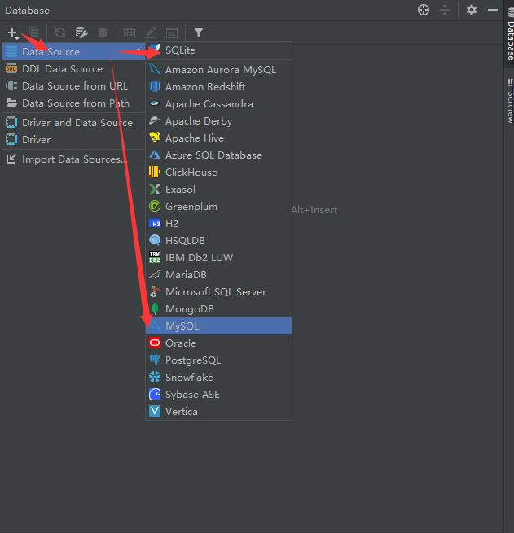
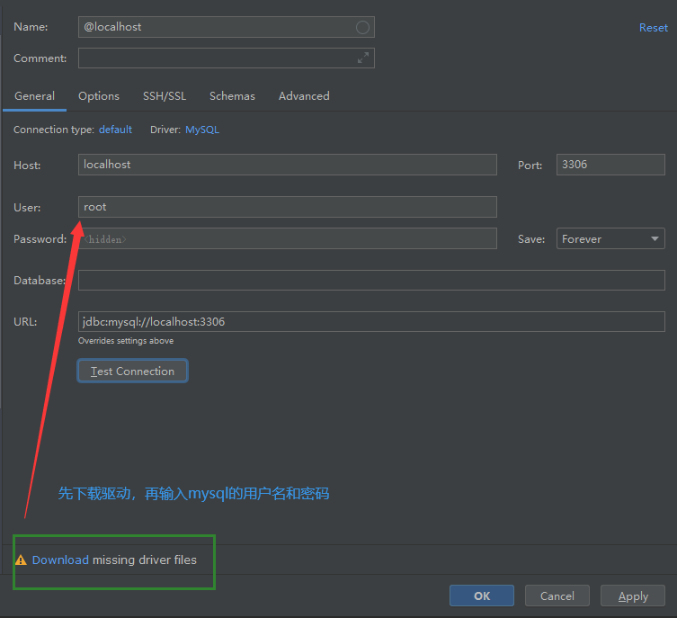
（3）添加测试数据¶
INSERT INTO `db_student`
(`id`,`name`,`sex`,`class`,`age`,`description`,`created_time`,`updated_time`)
VALUES
(1,'赵华',1,307,22,'对于勤奋的人来说，成功不是偶然；对于懒惰的人来说，失败却是必然。','2020-11-20 10:00:00','2020-11-20 10:00:00'),
(2,'程星云',1,301,20,'人生应该如蜡烛一样，从顶燃到底，一直都是光明的。','2020-11-20 10:00:00','2020-11-20 10:00:00'),
(3,'陈峰',1,504,21,'在不疯狂，我们就老了，没有记忆怎么祭奠呢？','2020-11-20 10:00:00','2020-11-20 10:00:00'),(4,'苏礼就',1,502,20,'不要为旧的悲伤，浪费新的眼泪。','2020-11-20 10:00:00','2020-11-20 10:00:00'),
(5,'张小玉',2,306,18,'没有血和汗水就没有成功的泪水。','2020-11-20 10:00:00','2020-11-20 10:00:00'),
(6,'吴杰',1,307,19,'以大多数人的努力程度之低，根本轮不到去拼天赋','2020-11-20 10:00:00','2020-11-20 10:00:00'),
(7,'张小辰',2,405,19,'人生的道路有成千上万条， 每一条路上都有它独自的风景。','2020-11-20 10:00:00','2020-11-20 10:00:00'),
(8,'王丹丹',2,502,22,'平凡的人听从命运，坚强的人主宰命运。','2020-11-20 10:00:00','2020-11-20 10:00:00'),
(9,'苗俊伟',1,503,22,'外事找谷歌，内事找百度。','2020-11-20 10:00:00','2020-11-20 10:00:00'),
(10,'娄镇明',1,301,22,'不经三思不求教，不动笔墨不读书。','2020-11-20 10:00:00','2020-11-20 10:00:00'),
(11,'周梦琪',2,306,19,'学习与坐禅相似，须有一颗恒心。','2020-11-20 10:00:00','2020-11-20 10:00:00'),
(12,'欧阳博',1,503,23,'春去秋来，又一年。What did you get ?','2020-11-20 10:00:00','2020-11-20 10:00:00'),
(13,'颜敏莉',2,306,20,'Knowledge makes humble, ignorance makes proud.','2020-11-20 10:00:00','2020-11-20 10:00:00'),
(14,'柳宗仁',1,301,20,'有志者事竟成。','2020-11-20 10:00:00','2020-11-20 10:00:00'),
(15,'谢海龙',1,402,22,'这世界谁也不欠谁，且行且珍惜。','2020-11-20 10:00:00','2020-11-20 10:00:00'),
(16,'邓士鹏',1,508,22,'青，取之于蓝而青于蓝；冰，水为之而寒于水。','2020-11-20 10:00:00','2020-11-20 10:00:00'),
(17,'宁静',2,502,23,'一息若存 希望不灭','2020-11-20 10:00:00','2020-11-20 10:00:00'),
(18,'上官屏儿',2,502,21,'美不自美,因人而彰。','2020-11-20 10:00:00','2020-11-20 10:00:00'),
(19,'孙晓静',2,503,20,'人生本过客，何必千千结；无所谓得失，淡看风和雨。','2020-11-20 10:00:00','2020-11-20 10:00:00'),
(20,'刘承志',1,306,20,'good good study,day day up! ^-^','2020-11-20 10:00:00','2020-11-20 10:00:00'),
(21,'王浩',1,503,21,'积土而为山，积水而为海。','2020-11-20 10:00:00','2020-11-20 10:00:00'),
(22,'钟无艳',2,303,19,'真者，精诚之至也，不精不诚，不能动人。','2020-11-20 10:00:00','2020-11-20 10:00:00'),
(23,'莫荣轩',1,409,22,'不管发生什么事，都请安静且愉快地接受人生，勇敢地、大胆地，而且永远地微笑着。','2020-11-20 10:00:00','2020-11-20 10:00:00'),
(24,'张裕民',1,303,21,'伟大的目标形成伟大的人物。','2020-11-20 10:00:00','2020-11-20 10:00:00'),
(25,'江宸轩',1,407,22,'用最少的悔恨面对过去。','2020-11-20 10:00:00','2020-11-20 10:00:00'),
(26,'谭季同',1,305,21,'人总是珍惜未得到的，而遗忘了所拥有的。','2020-11-20 10:00:00','2020-11-20 10:00:00'),
(27,'李松风',1,504,19,'明天的希望，让我们忘了今天的痛苦。','2020-11-20 10:00:00','2020-11-20 10:00:00'),
(28,'叶宗政',1,407,20,'因害怕失败而不敢放手一搏，永远不会成功。','2020-11-20 10:00:00','2020-11-20 10:00:00'),
(29,'魏雪宁',2,306,20,'成功与失败只有一纸之隔','2020-11-20 10:00:00','2020-11-20 10:00:00'),
(30,'徐秋菱',2,404,19,'年轻是我们唯一拥有权利去编织梦想的时光。','2020-11-20 10:00:00','2020-11-20 10:00:00'),
(31,'曾嘉慧',2,301,19,'有一分热，发一分光。就令萤火一般，也可以在黑暗里发一点光，不必等候炬火。','2020-11-20 10:00:00','2020-11-20 10:00:00'),
(32,'欧阳镇安',1,408,23,'青春虚度无所成，白首衔悲补何及!','2020-11-20 10:00:00','2020-11-20 10:00:00'),
(33,'周子涵',2,309,19,'青春是一个普通的名称，它是幸福美好的，但它也是充满着艰苦的磨炼。','2020-11-20 10:00:00','2020-11-20 10:00:00'),
(34,'宋应诺',2,501,23,'涓滴之水终可以磨损大石，不是由于它力量强大，而是由于昼夜不舍的滴坠。','2020-11-20 10:00:00','2020-11-20 10:00:00'),
(35,'白瀚文',1,305,19,'一个人假如不脚踏实地去做，那么所希望的一切就会落空。','2020-11-20 10:00:00','2020-11-20 10:00:00'),
(36,'陈匡怡',2,505,19,'一份耕耘，一份收获。','2020-11-20 10:00:00','2020-11-20 10:00:00'),
(37,'邵星芸',2,503,22,'冰冻三尺非一日之寒。','2020-11-20 10:00:00','2020-11-20 10:00:00'),
(38,'王天歌',2,302,21,'任何的限制，都是从自己的内心开始的。','2020-11-20 10:00:00','2020-11-20 10:00:00'),
(39,'王天龙',1,302,22,'再长的路，一步步也能走完，再短的路，不迈开双脚也无法到达。','2020-11-20 10:00:00','2020-11-20 10:00:00'),
(40,'方怡',2,509,23,'智者不做不可能的事情。','2020-11-20 10:00:00','2020-11-20 10:00:00'),
(41,'李伟',1,505,19,'人之所以能，是相信能。','2020-11-20 10:00:00','2020-11-20 10:00:00'),
(42,'李思玥',2,503,22,'人的一生可能燃烧也可能腐朽，我不能腐朽，我愿意燃烧起来。','2020-11-20 10:00:00','2020-11-20 10:00:00'),
(43,'赵思成',1,401,18,'合抱之木，生于毫末;九层之台，起于累土。','2020-11-20 10:00:00','2020-11-20 10:00:00'),
(44,'蒋小媛',2,308,22,'不积跬步无以至千里，不积细流无以成江河。','2020-11-20 10:00:00','2020-11-20 10:00:00'),
(45,'龙华',1,510,19,'只要持续地努力，不懈地奋斗，就没有征服不了的东西。','2020-11-20 10:00:00','2020-11-20 10:00:00'),
(46,'牧婧白夜',2,501,21,'读不在三更五鼓，功只怕一曝十寒。','2020-11-20 10:00:00','2020-11-20 10:00:00'),
(47,'江俊文',1,304,19,'立志不坚，终不济事。','2020-11-20 10:00:00','2020-11-20 10:00:00'),
(48,'李亚容',2,304,18,'Keep on going never give up.','2020-11-20 10:00:00','2020-11-20 10:00:00'),
(49,'王紫伊',2,301,22,'最可怕的敌人，就是没有坚强的信念。','2020-11-20 10:00:00','2020-11-20 10:00:00'),
(50,'毛小宁',1,501,19,'要从容地着手去做一件事，但一旦开始，就要坚持到底。','2020-11-20 10:00:00','2020-11-20 10:00:00'),
(51,'董 晴',2,507,19,'常常是最后一把钥匙打开了门。贵在坚持','2020-11-20 10:00:00','2020-11-20 10:00:00'),
(52,'严语',2,405,18,'逆水行舟，不进则退。','2020-11-20 10:00:00','2020-11-20 10:00:00'),
(53,'陈都灵',2,503,19,'无论什么时候，不管遇到什么情况，我绝不允许自己有一点点灰心丧气。','2020-11-20 10:00:00','2020-11-20 10:00:00'),
(54,'黄威',1,301,23,'我的字典里面没有“放弃”两个字','2020-11-20 10:00:00','2020-11-20 10:00:00'),
(55,'林佳欣',2,308,23,'梦想就是一种让你感到坚持,就是幸福的东西。','2020-11-20 10:00:00','2020-11-20 10:00:00'),
(56,'翁心颖',2,303,19,'有目标的人才能成功，因为他们知道自己的目标在哪里。','2020-11-20 10:00:00','2020-11-20 10:00:00'),
(57,'蒙毅',1,502,22,'所谓天才，就是努力的力量。','2020-11-20 10:00:00','2020-11-20 10:00:00'),
(58,'李小琳',2,509,22,'每天早上对自己微笑一下。这就是我的生活态度。','2020-11-20 10:00:00','2020-11-20 10:00:00'),
(59,'伍小龙',1,406,19,'一路上的点点滴滴才是我们的财富。','2020-11-20 10:00:00','2020-11-20 10:00:00'),
(60,'晁然',2,305,23,'人的价值是由自己决定的。','2020-11-20 10:00:00','2020-11-20 10:00:00'),
(61,'端木浩然',1,507,18,'摔倒了爬起来再哭。','2020-11-20 10:00:00','2020-11-20 10:00:00'),
(62,'姜沛佩',2,309,21,'Believe in yourself.','2020-11-20 10:00:00','2020-11-20 10:00:00'),
(63,'李栋明',1,306,19,'虽然过去不能改变，但是未来可以。','2020-11-20 10:00:00','2020-11-20 10:00:00'),
(64,'柴柳依',2,508,23,'没有实践就没有发言权。','2020-11-20 10:00:00','2020-11-20 10:00:00'),
(65,'吴杰',1,401,22,'人生有两出悲剧。一是万念俱灰;另一是踌躇满志','2020-11-20 10:00:00','2020-11-20 10:00:00'),
(66,'杜文华',1,507,19,'有智者立长志，无志者长立志。','2020-11-20 10:00:00','2020-11-20 10:00:00'),
(67,'邓珊珊',2,510,18,'Action is the proper fruit of knowledge.','2020-11-20 10:00:00','2020-11-20 10:00:00'),
(68,'杜俊峰',1,507,23,'世上无难事，只要肯登攀。','2020-11-20 10:00:00','2020-11-20 10:00:00'),
(69,'庄信杰',1,301,22,'知识就是力量。','2020-11-20 10:00:00','2020-11-20 10:00:00'),
(70,'宇文轩',1,402,23,'如果你想要某样东西，别等着有人某天会送给你。生命太短，等不得。','2020-11-20 10:00:00','2020-11-20 10:00:00'),
(71,'黄佳怿',2,510,19,'Learn and live.','2020-11-20 10:00:00','2020-11-20 10:00:00'),
(72,'卫然',1,510,18,'神于天，圣于地。','2020-11-20 10:00:00','2020-11-20 10:00:00'),
(73,'耶律齐',1,307,23,'如果不是在海市蜃楼中求胜，那就必须脚踏实地去跋涉。','2020-11-20 10:00:00','2020-11-20 10:00:00'),
(74,'白素欣',2,305,18,'欲望以提升热忱，毅力以磨平高山。','2020-11-20 10:00:00','2020-11-20 10:00:00'),
(75,'徐鸿',1,403,23,'最美的不是生如夏花，而是在时间的长河里，波澜不惊。','2020-11-20 10:00:00','2020-11-20 10:00:00'),
(76,'上官杰',1,409,19,'生活之所以耀眼，是因为磨难与辉煌会同时出现。','2020-11-20 10:00:00','2020-11-20 10:00:00'),
(77,'吴兴国',1,406,18,'生活的道路一旦选定，就要勇敢地走到底，决不回头。','2020-11-20 10:00:00','2020-11-20 10:00:00'),
(78,'庄晓敏',2,305,18,'Never say die.','2020-11-20 10:00:00','2020-11-20 10:00:00'),
(79,'吴镇升',1,509,18,'Judge not from appearances.','2020-11-20 10:00:00','2020-11-20 10:00:00'),
(80,'朱文丰',1,304,19,'每个人都比自己想象的要强大，但同时也比自己想象的要普通。','2020-11-20 10:00:00','2020-11-20 10:00:00'),
(81,'苟兴妍',2,508,18,'Experience is the best teacher.','2020-11-20 10:00:00','2020-11-20 10:00:00'),
(82,'祝华生',1,302,21,'浅学误人。','2020-11-20 10:00:00','2020-11-20 10:00:00'),
(83,'张美琪',2,404,23,'最淡的墨水，也胜过最强的记性。','2020-11-20 10:00:00','2020-11-20 10:00:00'),
(84,'周永麟',1,308,21,'All work and no play makes Jack a dull boy.','2020-11-20 10:00:00','2020-11-20 10:00:00'),
(85,'郑心',2,404,21,'人生就像一杯茶，不会苦一辈子，但总会苦一阵子。','2020-11-20 10:00:00','2020-11-20 10:00:00'),
(86,'公孙龙馨',1,510,21,'Experience is the father of wisdom and memory the mother.','2020-11-20 10:00:00','2020-11-20 10:00:00'),
(87,'叶灵珑',2,401,19,'读一书，增一智。','2020-11-20 10:00:00','2020-11-20 10:00:00'),
(88,'上官龙',1,501,21,'别人能做到的事，自己也可以做到。','2020-11-20 10:00:00','2020-11-20 10:00:00'),
(89,'颜振超',1,303,19,'如果要飞得高，就该把地平线忘掉。','2020-11-20 10:00:00','2020-11-20 10:00:00'),
(90,'玛诗琪',2,409,22,'每天进步一点点，成功不会远。','2020-11-20 10:00:00','2020-11-20 10:00:00'),
(91,'李哲生',1,309,22,'这不是偶然的失误，是必然的结果。','2020-11-20 10:00:00','2020-11-20 10:00:00'),
(92,'罗文华',2,408,22,'好走的都是下坡路。','2020-11-20 10:00:00','2020-11-20 10:00:00'),
(93,'李康',1,509,19,'Deliberate slowly, promptly.','2020-11-20 10:00:00','2020-11-20 10:00:00'),
(94,'钟华强',1,405,19,'混日子很简单,讨生活比较难。','2020-11-20 10:00:00','2020-11-20 10:00:00'),
(95,'张今菁',2,403,23,'不经一翻彻骨寒，怎得梅花扑鼻香。','2020-11-20 10:00:00','2020-11-20 10:00:00'),
(96,'黄伟麟',1,407,19,'与其诅咒黑暗，不如燃起蜡烛。没有人能给你光明，除了你自己。','2020-11-20 10:00:00','2020-11-20 10:00:00'),
(97,'程荣泰',1,406,22,'明天不一定更好,。但更好的明天一定会来。','2020-11-20 10:00:00','2020-11-20 10:00:00'),
(98,'范伟杰',1,508,19,'水至清则无鱼，人至察则无徒。凡事不能太执着。','2020-11-20 10:00:00','2020-11-20 10:00:00'),
(99,'王俊凯',1,407,21,'我欲将心向明月,奈何明月照沟渠。','2020-11-20 10:00:00','2020-11-20 10:00:00'),
(100,'白杨 ',1,406,19,'闪电从不打在相同的地方.人不该被相同的方式伤害两次。','2020-11-20 10:00:00','2020-11-20 10:00:00');
-- 作业：
-- 1. 完成学生的创建，导入上面的数据。
-- 2. 使用原来学过的SQL语句，然后对上面导入的学生信息，完成增删查改的操作。
-- 2.0 查询所有的学生信息（name，age）
SELECT name,age FROM db_student
-- 2.1 查询年龄在18-20之间的学生信息[name,age,sex]
select name,age,sex from db_student where age >=18 and age <=20;
-- 2.2 查询年龄在18-20之间的男生信息[name,age,sex]
select name,age,if(sex=1,'男','女') as sex from db_student where age >=18 and age <=20 and sex=1;
-- 2.3 查询401-406之间所有班级的学生信息[name,age,sex,class]
select name,age,sex,class from db_student where class between 401 and 406;
-- 2.4 查询401-406之间所有班级的总人数
select count(1) as c from db_student where class between 401 and 406;
-- 2.5 添加一个学生，男，刘德华，302班，17岁，"给我一杯水就行了。",'2020-11-20 10:00:00','2020-11-20 10:00:00'
insert into db_student (name,sex,class, age, description, created_time,updated_time) values ('刘德华',1,'302', 17, "给我一杯水就行了。",'2020-11-20 10:00:00','2020-11-20 10:00:00');
-- 2.6 修改刘德华的年龄，为19岁。
update db_student set age=19 where name='刘德华';
-- 2.7 刘德华毕业了，把他从学生表中删除
delete from db_student where name='刘德华';
-- 2.8 找到所有学生中，年龄最小的5位同学和年龄最大的5位同学
select * from db_student order by age asc limit 5;
select * from db_student order by age desc limit 5;
-- 2.9 【进阶】找到所有班级中人数超过4个人班级出来
select class,count(id) as total from db_student group by class having total >= 4;
-- 2.10【进阶】把上面2.8的要求重新做一遍，改成一条数据实现
(select * from db_student order by age asc limit 5) union all (select * from db_student order by age desc limit 5);
6.4、数据库基本操作¶
6.4.1、添加记录¶
（1）save方法¶
通过创建模型类对象，执行对象的save()方法保存到数据库中。
student = Student(
name="刘德华",
age=17,
sex=True,
clasmate=301,
description="一手忘情水"
)
student.save()
print(student.id) # 判断是否新增有ID
（2）create方法¶
通过模型类.objects.create()保存。
student = Student.objects.create(
name="赵本山",
age=50,
sex=True,
class_number=301,
description="一段小品"
)
print(student.id)
6.4.2、基础查询¶
ORM中针对查询结果的数量限制,提供了一个查询集[QuerySet].这个QuerySet,是ORM中针对查询结果进行保存数据的一个类型,我们可以通过了解这个QuerySet进行使用,达到查询优化,或者限制查询结果数量的作用。
查询集，也称查询结果集、QuerySet，表示从数据库中获取的对象集合。当调用如下过滤器方法时，Django会返回查询集（而不是简单的列表）：
- all()：返回所有数据。
- filter()：返回满足条件的数据。filter会默认调用all方法
- exclude()：返回满足条件之外的数据。exclude会默认调用all方法
- order_by()：对结果进行排序。order_by会默认调用all方法
（1）all()¶
查询所有对象
（2）filter()¶
筛选条件相匹配的对象
（3）get()¶
返回与所给筛选条件相匹配的对象，返回结果有且只有一个， 如果符合筛选条件的对象超过一个或者没有都会抛出错误。
student = Student.objects.get(pk=104)
print(student)
print(student.description)
get使用过程中的注意点：get是根据条件返回多个结果或者没有结果，都会报错
try:
student = Student.objects.get(name="刘德华")
print(student)
print(student.description)
except Student.MultipleObjectsReturned:
print("查询得到多个结果！")
except Student.DoesNotExist:
print("查询结果不存在！")
（4）first()、last()¶
分别为查询集的第一条记录和最后一条记录
（5）exclude()¶
筛选条件不匹配的对象
（6）order_by()¶
对查询结果排序
# order_by("字段") # 按指定字段正序显示，相当于 asc 从小到大
# order_by("-字段") # 按字段倒序排列，相当于 desc 从大到小
# order_by("第一排序","第二排序",...)
# student_list = Student.objects.filter(classmate="301").order_by("-age").all()
# student_list = Student.objects.filter(classmate="301").order_by("age").all() #正序
student_list = Student.objects.filter(classmate="301").order_by("-age","id").all() # 年龄倒序，年龄一致按id进行正序
for student in student_list:
print(f"id={student.id}, name={student.name}, age={student.age}")
（7）count()¶
查询集中对象的个数
（8）exists()¶
判断查询集中是否有数据，如果有则返回True，没有则返回False
（9）values()、values_list()¶
-
value()把结果集中的模型对象转换成字典,并可以设置转换的字段列表，达到减少内存损耗，提高性能 -
values_list(): 把结果集中的模型对象转换成列表，并可以设置转换的字段列表（元祖），达到减少内存损耗，提高性能
# values 把查询结果中模型对象转换成字典
student_list = Student.objects.filter(classmate="301")
student_list = student_list.order_by("-age")
student_list = student_list.filter(sex=1)
ret1 = student_list.values() # 默认把所有字段全部转换并返回
ret2 = student_list.values("id","name","age") # 可以通过参数设置要转换的字段并返回
ret3 = student_list.values_list() # 默认把所有字段全部转换并返回
ret4 = student_list.values_list("id","name","age") # 可以通过参数设置要转换的字段并返回
print(ret4)
return JsonResponse({},safe=False)
（11）distinct()¶
从返回结果中剔除重复纪录
6.4.3、模糊查询¶
（1）模糊查询之contains¶
说明：如果要包含%无需转义，直接写即可。
例：查询姓名包含'华'的学生。
（2）模糊查询之startswith、endswith¶
例：查询姓名以'文'结尾的学生
以上运算符都区分大小写，在这些运算符前加上i表示不区分大小写，如iexact、icontains、istartswith、iendswith.
（3）模糊查询之isnull¶
例：查询个性签名不为空的学生。
# 修改Student模型description属性允许设置为null，然后数据迁移
description = models.TextField(default=None, null=True, verbose_name="个性签名")
# 添加测试数据
NSERT INTO student.db_student (name, age, sex, class, description, created_time, updated_time) VALUES ('刘德华', 17, 1, '407', null, '2020-11-20 10:00:00.000000', '2020-11-20 10:00:00.000000');
# 代码操作
tudent_list = Student.objects.filter(description__isnull=True)
（4）模糊查询之in¶
例：查询编号为1或3或5的学生
（5）模糊查询之比较查询¶
- gt 大于 (greater then)
- gte 大于等于 (greater then equal)
- lt 小于 (less then)
- lte 小于等于 (less then equal)
例：查询编号大于3的学生
（6）模糊查询之日期查询¶
year、month、day、week_day、hour、minute、second：对日期时间类型的属性进行运算。
例：查询2010年被添加到数据中的学生。
例：查询2016年6月20日后添加的学生信息。
from django.utils import timezone as datetime
student_list = Student.objects.filter(created_time__gte=datetime.datetime(2016,6,20),created_time__lt=datetime.datetime(2016,6,21)).all()
print(student_list)
6.4.4、进阶查询¶
（1） F查询¶
之前的查询都是对象的属性与常量值比较，两个属性怎么比较呢？ 答：使用F对象，被定义在django.db.models中。
语法如下：
"""F对象：2个字段的值比较"""
# 获取从添加数据以后被改动过数据的学生
from django.db.models import F
# SQL: select * from db_student where created_time=updated_time;
student_list = Student.objects.exclude(created_time=F("updated_time"))
print(student_list)
（2） Q查询¶
多个过滤器逐个调用表示逻辑与关系，同sql语句中where部分的and关键字。
例：查询年龄大于20，并且编号小于30的学生。
如果需要实现逻辑或or的查询，需要使用Q()对象结合|运算符，Q对象被义在django.db.models中。
语法如下：
例：查询年龄小于19或者大于20的学生，使用Q对象如下。
from django.db.models import Q
student_list = Student.objects.filter( Q(age__lt=19) | Q(age__gt=20) ).all()
Q对象可以使用&、|连接，&表示逻辑与，|表示逻辑或**
例：查询年龄大于20，或编号小于30的学生，只能使用Q对象实现
Q对象左边可以使用~操作符，表示非not。但是工作中，我们只会使用Q对象进行或者的操作，只有多种嵌套复杂的查询条件才会使用&和~进行与和非得操作。
例：查询编号不等于30的学生。
（3）聚合查询¶
使用aggregate()过滤器调用聚合函数。聚合函数包括：Avg 平均，Count 数量，Max 最大，Min 最小，Sum 求和，被定义在django.db.models中。
例：查询学生的平均年龄。
注意：aggregate的返回值是一个字典类型，格式如下：
使用count时一般不使用aggregate()过滤器。
例：查询学生总数。
（4）分组查询¶
QuerySet对象.annotate()
# annotate() 进行分组统计，按前面select 的字段进行 group by
# annotate() 返回值依然是 queryset对象，增加了分组统计后的键值对
模型对象.objects.values("id").annotate(course=Count('course__sid')).values('id','course')
# 查询指定模型， 按id分组 , 将course下的sid字段计数，返回结果是 name字段 和 course计数结果
# SQL原生语句中分组之后可以使用having过滤，在django中并没有提供having对应的方法，但是可以使用filter对分组结果进行过滤
# 所以filter在annotate之前，表示where，在annotate之后代表having
# 同理，values在annotate之前，代表分组的字段，在annotate之后代表数据查询结果返回的字段
（5）原生查询¶
执行原生SQL语句,也可以直接跳过模型,才通用原生pymysql.
ret = Student.objects.raw("SELECT id,name,age FROM tb_student") # student 可以是任意一个模型
# 这样执行获取的结果无法通过QuerySet进行操作读取,只能循环提取
for item in ret:
print(item)
6.4.5、修改记录¶
（1） 使用save更新数据¶
student = Student.objects.filter(name='刘德华').first()
print(student)
student.age = 19
student.classmate = "303"
# save之所以能提供给我们添加数据的同时，还可以更新数据的原因？
# save会找到模型的字段的主键id的值，
# 主键id的值如果是none，则表示当前数据没有被数据库，所以save会自动变成添加操作
# 主键id有值，则表示当前数据在数据库中已经存在，所以save会自动变成更新数据操作
student.save()
（2）update更新（推荐）¶
使用模型类.objects.filter().update()，会返回受影响的行数
# update是全局更新，只要符合更新的条件，则全部更新，因此强烈建议加上条件！！！
student = Student.objects.filter(name="赵华",age=22).update(name="刘芙蓉",sex=True)
print(student)
6.4.6、删除记录¶
删除有两种方法
（1）模型类对象.delete¶
（2）模型类.objects.filter().delete()¶
代码：
# 1. 先查询到数据模型对象。通过模型对象进行删除
# student = Student.objects.filter(pk=13).first()
# student.delete()
# 2. 直接删除
ret = Student.objects.filter(pk=100).delete()
print(ret)
# 务必写上条件，否则变成了清空表了。ret = Student.objects.filter().delete()
6.5、创建关联模型¶
实例：我们来假定下面这些概念，字段和关系
- 作者模型：一个作者有姓名和年龄。
- 作者详细模型：把作者的详情放到详情表，包含生日，手机号，家庭住址等信息。作者详情模型和作者模型之间是一对一的关系（one-to-one）
- 出版商模型：出版商有名称，所在城市以及email。
- 书籍模型： 书籍有书名和出版日期，一本书可能会有多个作者，一个作者也可以写多本书，所以作者和书籍的关系就是多对多的关联关系(many-to-many);一本书只应该由一个出版商出版，所以出版商和书籍是一对多关联关系(one-to-many)。
模型建立如下：
from django.db import models
# Create your models here.
class Book(models.Model):
nid = models.AutoField(primary_key=True)
title = models.CharField(max_length=32)
publishDate = models.DateField()
price = models.DecimalField(max_digits=5, decimal_places=2)
# 与Publish建立一对多的关系,外键字段建立在多的一方
# on_delete= 关联关系的设置
# models.CASCADE 删除主键以后, 对应的外键所在数据也被删除
# models.DO_NOTHING 删除主键以后, 对应的外键不做任何修改
# 反向查找字段 related_name
publish = models.ForeignKey(to="Publish", to_field="nid",related_name="booklist",on_delete=models.CASCADE)
# 与Author表建立多对多的关系,ManyToManyField可以建在两个模型中的任意一个，自动创建第三张表
authors = models.ManyToManyField(to='Author',related_name='booklist',db_table="tb_book_author")
class Meta:
db_table = 'tb_book'
class Publish(models.Model):
nid = models.AutoField(primary_key=True)
name = models.CharField(max_length=32)
city = models.CharField(max_length=32)
email = models.EmailField()
class Meta:
db_table = 'tb_publish'
class Author(models.Model):
nid = models.AutoField(primary_key=True)
name = models.CharField(max_length=32)
age = models.IntegerField()
# 与AuthorDetail建立一对一的关系
authorDetail = models.OneToOneField(to="AuthorDetail",on_delete=models.CASCADE)
class Meta:
db_table = 'tb_author'
class AuthorDetail(models.Model):
nid = models.AutoField(primary_key=True)
birthday = models.DateField()
telephone = models.BigIntegerField()
addr = models.CharField(max_length=64)
class Meta:
db_table = 'tb_authorDetail'
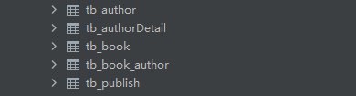
6.6、关联添加¶
（1）一对多¶
# 方式1:
pub_obj= Publish.objects.get(pk=2)
Book.objects.create(title="西游记",price = 122,publishDate="2012-12-12",publish=pub_obj)
# 方式2:
Book.objects.create(title="三国演义", price=345, publishDate="2012-12-12", publish_id=1)
一对一添加方式和一对多相同
（2）多对多¶
# 多对多添加记录
# 给西游记添加yuan和alivn两个作者
author1 = Author.objects.get(name="yuan")
author2 = Author.objects.get(name="alvin")
book = Book.objects.get(title="西游记")
# book.authors.add(author1,author2)
# book.authors.add(*[author1,author2])
book.authors.add(*[2,3])
book.authors.remove(2)
book.authors.remove(*[2,3])
book.authors.clear()
book.authors.set(2)
# authors = book.authors.all()
# print(authors.values("name","age"))
# authors.delete()
6.7、关联查询¶
6.7.1、基于对象查询（子查询）¶
# （1）一对多
# 查询西游记的出版社的名字
book = Book.objects.get(title='西游记')
print(book.publish.name)
# 查询西瓜出版社出版的书籍名称
publish = Publish.objects.get(name="西瓜出版社")
books = publish.booklist.all()
print(books)
# （2）多对多
# 查询西游记的所有作者的名字
books = book.authors.all()
print(books)
# 查询yuan出版过的所有书籍
author = Author.objects.get(name="yuan")
books =author.booklist.all()
print(books)
# （3）一对一
# 查询yuan的手机号
print(author.ad.telephone)
# 查询手机号为110的作者名字
ad = AuthorDetail.objects.get(telephone=110)
print(ad.author.name)
（1）正向查询按字段
（2）反向查询按表名小写或表名小写_set或者related_name
6.7.2、基于双下划线查询（join查询）¶
# （1）一对多
# 查询西游记的出版社的名字
ret = Book.objects.filter(price__gt=100).values("publish__name")
print(ret) # <QuerySet [{'publish__name': '西瓜出版社'}]>
ret = Publish.objects.filter(booklist__title="西游记").values("name")
print(ret) # <QuerySet [{'name': '西瓜出版社'}]>
# 查询id>1的出版社出版的书籍名称
ret = Publish.objects.filter(pk__gte=1).values("booklist__title")
print(ret)
ret = Book.objects.filter(publish__pk__gte=1).values("title")
print(ret)
# （2）多对多
# 查询西游记的所有作者的名字
ret = Book.objects.filter(title="西游记").values("authors__name")
print(ret) # <QuerySet [{'authors__name': 'yuan'}, {'authors__name': 'alvin'}]>
ret = Author.objects.filter(booklist__title="西游记").values("name")
print(ret)
# 查询yuan出版过的所有书籍
Book.objects.filter(authors__name="yuan").values("title")
Author.objects.filter(name='yuan').values("booklist__title")
# 查询yuan的手机号
Author.objects.filter(name="yuan").values("ad__telephone")
AuthorDetail.objects.filter(author__name="yuan").values("telephone")
# （3）一对一
# 查询手机号为110的作者名字
AuthorDetail.objects.filter(telephone=110).values("author__name")
Author.objects.filter(authorDetail__telephone=110).values("name")
# 手机号为110的作者出版过的所有书籍名称以及出版社名称
Book.objects.filter(authors__authorDetail__telephone=110).values("title","publish__name")
# (4) 进阶练习
# 手机号以151开头的作者出版过的所有书籍名称以及出版社名称
queryResult=Book.objects.filter(authors__authorDetail__telephone__regex="151").values_list("title","publish__name")
（1）正向关联按关联字段
（2）反向按表名小写或related_name
6.7.3、关联分组查询¶
from django.db.models import Avg,Max,Min,Count,Sum
ret = Book.objects.all().aggregate(m_price=Max("price"))
print(ret) # {'m_price': Decimal('345')}
# 查询每一个出版社出版过得书籍的平均价格
ret = Book.objects.values("publish_id").annotate(avg_pricve=Avg("price"))
print(ret)
# 查询每一个出版社的名称以及出版过得书籍的平均价格
# 方式1
ret = Book.objects.values("publish__name").annotate(avg_pricve=Avg("price"))
print(ret)
# <QuerySet [{'publish__name': '芒果出版社', 'avg_pricve': Decimal('233.5')}, {'publish__name': '西瓜出版社', 'avg_pricve': Decimal('222')}]>
# 方式2
ret = Publish.objects.all().annotate(max_price =Max("booklist__price")).values("name","email","max_price")
print(ret)
# 每一个作者出版过得书籍的个数
ret = Author.objects.all().annotate(c = Count("booklist")).values("name","c")
print(ret)
# 查询出版书籍个数大于1的作者的名字以及出版书籍的个数
ret = Author.objects.all().annotate(c=Count("booklist")).filter(c__gt=1).values("name","c")
print(ret)
# 统计每一个出版社的最便宜的书
ret = Publish.objects.all().annotate(c =Min("booklist__price")).values("name","c")
print(ret)
# 统计每一本书籍的作者个数：
ret = Book.objects.all().annotate(c = Count("authors")).values("title","c")
print(ret)
# 统计不止一个作者的图书：
ret = Book.objects.all().annotate(c=Count("authors")).filter(c__gt=1).values("title","c")
print(ret)
# 根据一本图书作者数量的多少对查询集 QuerySet进行排序
ret = Book.objects.all().annotate(c=Count("authors")).order_by("c")
print(ret)
# 查询各个作者出的书的总价格
ret = Author.objects.all().annotate(sum_price=Sum("booklist__price")).values("name","sum_price")
print(ret)
七、Ajax请求¶
AJAX（Asynchronous Javascript And XML）翻译成中文就是“异步Javascript和XML”。即使用Javascript语言与服务器进行异步交互，传输的数据为XML（当然，传输的数据不只是XML,现在更多使用json数据）。
AJAX的优点：
- AJAX使用Javascript技术向服务器发送异步请求；
- AJAX无须刷新整个页面（局部刷新）；
- 因为服务器响应内容不再是整个页面，而是页面中的局部，所以AJAX性能高；
应用：
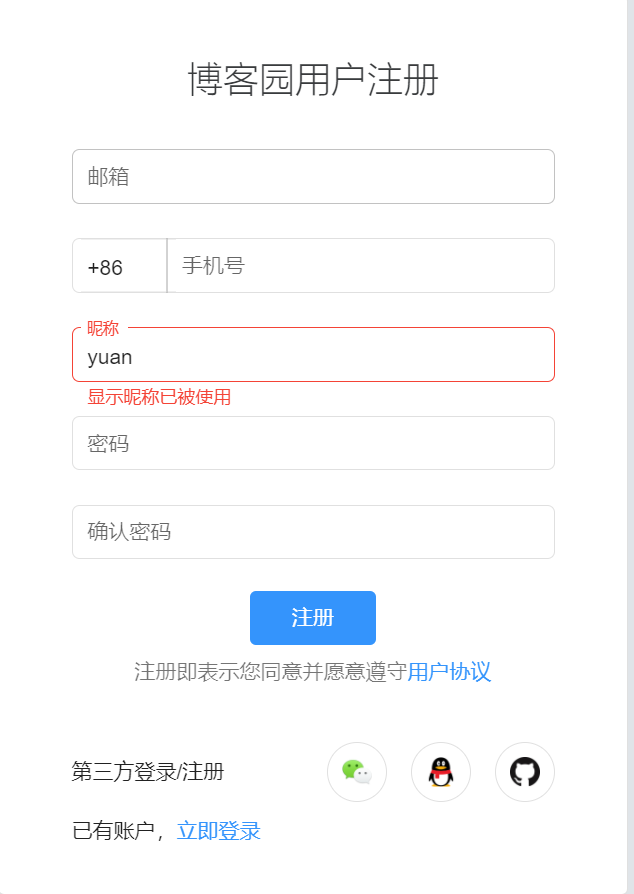
7.1、json数据¶
'''
Supports the following objects and types by default:
+-------------------+---------------+
| Python | JSON |
+===================+===============+
| dict | object |
+-------------------+---------------+
| list, tuple | array |
+-------------------+---------------+
| str | string |
+-------------------+---------------+
| int, float | number |
+-------------------+---------------+
| True | true |
+-------------------+---------------+
| False | false |
+-------------------+---------------+
| None | null |
+-------------------+---------------+
'''
python支持的序列化和反序列化方法¶
Django支持的序列化方法¶
关于Django中的序列化主要应用在将数据库中检索的数据返回给客户端用户，特别的Ajax请求一般返回的为Json格式。
from django.core import serializers
ret = models.BookType.objects.all()
data = serializers.serialize("json", ret)
7.2、Ajax请求案例¶
(1) 视图¶
# Create your views here.
def reg(request):
return render(request, "reg.html")
def reg_user(request):
data = {"msg": "", "state": "success"}
user = request.POST.get("user")
if user == "yuan":
data["state"] = "error"
data["msg"] = "该用户已存在！"
return JsonResponse(data)
(2) 模板：reg.html¶
<!DOCTYPE html>
<html lang="en">
<head>
<meta charset="UTF-8">
<title>Title</title>
</head>
<body>
<p>用户名：<input type="text"><span class="error" style="color: red"></span></p>
<script src="https://cdn.bootcdn.net/ajax/libs/jquery/3.6.0/jquery.js"></script>
<script>
$(":text").blur(function () {
// 发送Ajax请求
$.ajax({
url: "http://127.0.0.1:8008/reg_user/",
type: "post",
data: {
user: $(":text").val(),
},
success: function (response) {
console.log(response);
$(".error").html(response.msg);
}
})
})
</script>
</body>
</html>
(3) 流程图¶
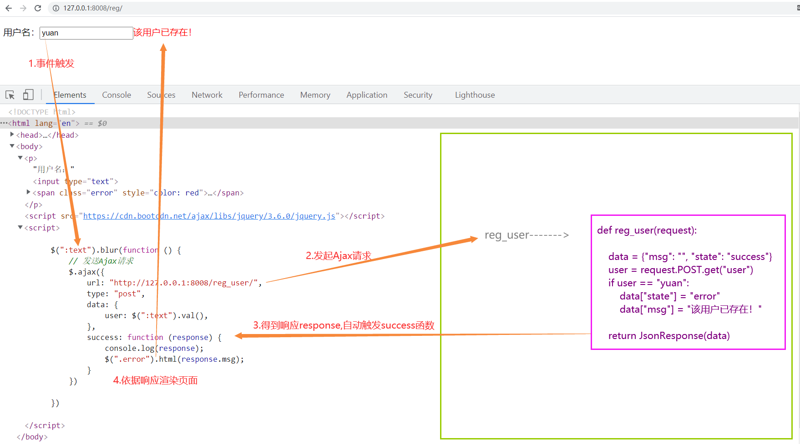
7.3、同源策略¶
现在我们将reg.html单独放在客户端，用浏览器打开，再触发事件，会发现报错：
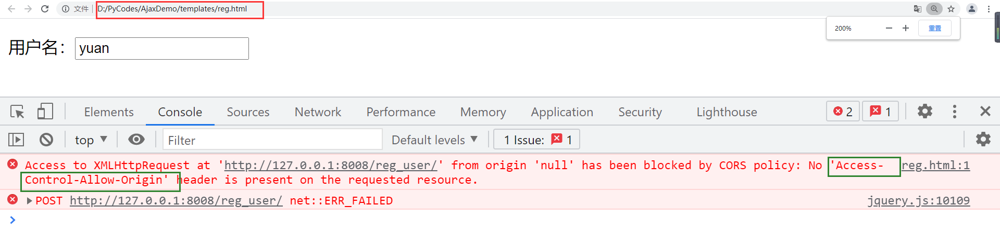
这是因为浏览器的同源策略导致的。
同源策略（Same origin policy）是一种约定，它是浏览器最核心也最基本的安全功能，如果缺少了同源策略，则浏览器的正常功能可能都会受到影响。可以说Web是构建在同源策略基础之上的，浏览器只是针对同源策略的一种实现。
同源策略，它是由Netscape提出的一个著名的安全策略。现在所有支持JavaScript 的浏览器都会使用这个策略。所谓同源是指，域名，协议，端口相同。当一个浏览器的两个tab页中分别打开来 百度和谷歌的页面当浏览器的百度tab页执行一个脚本的时候会检查这个脚本是属于哪个页面的，即检查是否同源，只有和百度同源的脚本才会被执行。如果非同源，那么在请求数据时，浏览器会在控制台中报一个异常，提示拒绝访问。
那么如何解决这种跨域问题呢，我们主要由三个思路：
- jsonp
- cors
- 前端代理
这里主要给大家介绍第二个：cors
CORS需要浏览器和服务器同时支持。目前，所有浏览器都支持该功能，IE浏览器不能低于IE10。
整个CORS通信过程，都是浏览器自动完成，不需要用户参与。对于开发者来说，CORS通信与同源的AJAX通信没有差别，代码完全一样。浏览器一旦发现AJAX请求跨源，就会自动添加一些附加的头信息，有时还会多出一次附加的请求，但用户不会有感觉。
因此，实现CORS通信的关键是服务器。只要服务器实现了CORS接口，就可以跨源通信。
所以，服务器方面只要添加一个响应头，同意跨域请求，浏览器也就不再拦截：
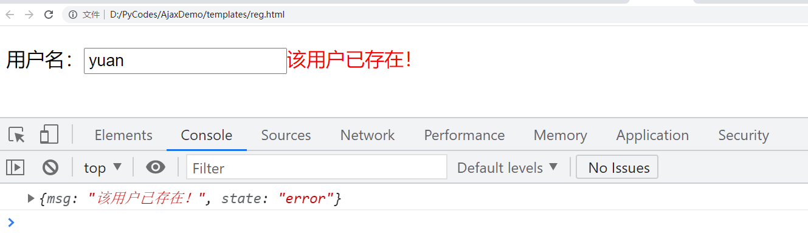
7.4、练习作业¶
- 计算器
- 登录案例
八、Django的组件¶
8.1、中间件¶
中间件顾名思义，是介于request与response处理之间的一道处理过程，相对比较轻量级，并且在全局上改变django的输入与输出。因为改变的是全局，所以需要谨慎实用，用不好会影响到性能。
Django的中间件的定义：
Middleware is a framework of hooks into Django’s request/response processing.
It’s a light, low-level “plugin” system for globally altering Django’s input or output.
MiddleWare，是 Django 请求/响应处理的钩子框架。
它是一个轻量级的、低级的“插件”系统，用于全局改变 Django 的输入或输出。【输入指代的就是客户端像服务端django发送数据，输出指代django根据客户端要求处理数据的结果返回给客户端】
如果你想修改请求，例如被传送到view中的HttpRequest对象。 或者你想修改view返回的HttpResponse对象，这些都可以通过中间件来实现。
django框架内部声明了很多的中间件，这些中间件有着各种各种的用途，有些没有被使用，有些被默认开启使用了。而被开启使用的中间件，都是在settngs.py的MIDDLEWARE中注册使用的。
Django默认的Middleware：
MIDDLEWARE = [
'django.middleware.security.SecurityMiddleware',
'django.contrib.sessions.middleware.SessionMiddleware',
'django.middleware.common.CommonMiddleware',
'django.middleware.csrf.CsrfViewMiddleware',
'django.contrib.auth.middleware.AuthenticationMiddleware',
'django.contrib.messages.middleware.MessageMiddleware',
'django.middleware.clickjacking.XFrameOptionsMiddleware',
]
8.1.1.自定义中间件¶
（1）定义中间件¶
创建存放自定义中间件的文件这里选择在app01里创建mdws.py文件：
from django.utils.deprecation import MiddlewareMixin
class Md1(MiddlewareMixin):
def process_request(self, request):
print("Md1请求")
# return HttpResponse("Md1中断") # 拦截
def process_response(self, request, response):
print("Md1返回")
return response
class Md2(MiddlewareMixin):
def process_request(self, request):
print("Md2请求")
# return HttpResponse("Md2中断")
def process_response(self, request, response):
print("Md2返回")
return response
- process_request默认返回None，返回None，则继续执行下一个中间件的process_request；一旦返回响应体对象，则会拦截返回。
- process_response必须有一个形参response，并return response；这是view函数返回的响应体，像接力棒一样传承给最后的客户端。
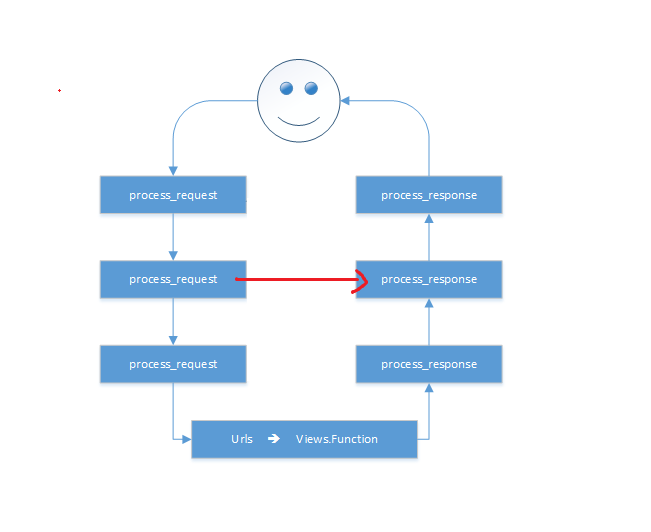
（2） 注册中间件¶
（3）构建index路由¶
# path('index/', views.index),
def index(request):
print("index 视图函数执行...")
return HttpResponse("hello yuan")
启动项目，访问index路径：
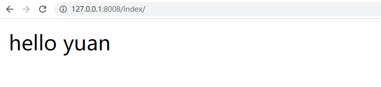
后台打印结果：
所以，通过结果我们看出中间件的执行顺序：

8.1.3.中间件应用¶
1. 做IP访问频率限制¶
某些IP访问服务器的频率过高，进行拦截，比如限制每分钟不能超过20次。
2. 权限访问限制¶
8.2、Cookie与Session¶
我们知道HTTP协议是无状态协议，也就是说每个请求都是独立的！无法记录前一次请求的状态。但HTTP协议中可以使用Cookie来完成会话跟踪！在Web开发中，使用session来完成会话跟踪，session底层依赖Cookie技术。
8.2.1、cookie¶
Cookie翻译成中文是小甜点，小饼干的意思。在HTTP中它表示服务器送给客户端浏览器的小甜点。其实Cookie是key-value结构，类似于一个python中的字典。随着服务器端的响应发送给客户端浏览器。然后客户端浏览器会把Cookie保存起来，当下一次再访问服务器时把Cookie再发送给服务器。 Cookie是由服务器创建，然后通过响应发送给客户端的一个键值对。客户端会保存Cookie，并会标注出Cookie的来源（哪个服务器的Cookie）。当客户端向服务器发出请求时会把所有这个服务器Cookie包含在请求中发送给服务器，这样服务器就可以识别客户端了！
cookie可以理解为每一个浏览器针对每一个服务器创建的key-value结构的本地存储文件
（1）cookie流程图¶
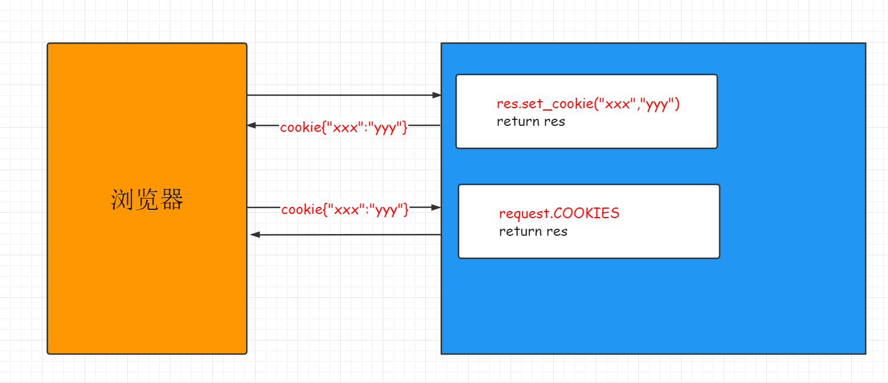
（2）cookie语法¶
# (1) 设置cookie：
res = HttpResponse(...) 或 rep ＝ render(request, ...) 或 rep ＝ redirect()
res.set_cookie(key,value,max_age...)
res.set_signed_cookie(key,value,salt='加密盐',...)
# (2) 获取cookie：
request.COOKIES
# (3) 删除cookie
response.delete_cookie("cookie_key",path="/",domain=name)
8.2.2、session¶
（1）session流程图¶
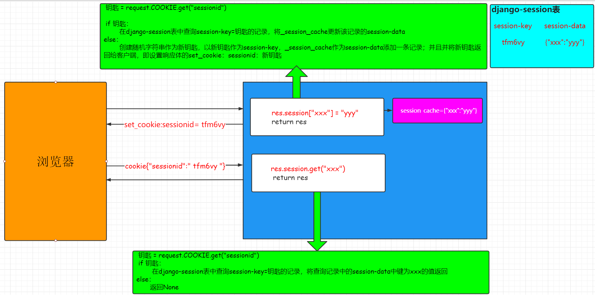
（2）session语法与案例¶
def s_login(request):
if request.method == "GET":
return render(request, "login.html")
else:
user = request.POST.get("user")
pwd = request.POST.get("pwd")
try:
# user_obj = User.objects.get(user=user,pwd=pwd)
# 写session
# request.session["is_login"] = True
# request.session["username"] = user_obj.user
return redirect("/s_index/")
except:
return redirect("/s_login/")
def s_index(request):
# 读session
is_login = request.session.get("is_login")
if is_login:
username = request.session.get("username")
return render(request, "index.html", {"user": username})
else:
return redirect("/s_login/")
'''
shop.html:
<p>
客户端最后一次访问时间：{{ last_time|default:"第一次访问" }}
</p>
<h3>商品页面</h3>
'''
def shop(request):
last_time = request.session.get("last_time")
now = datetime.datetime.now().strftime("%Y-%m-%d %X")
request.session["last_time"] = now
return render(request, "shop.html", {"last_time": last_time})
def s_logout(request):
# request.session.flush()
del request.session["username"]
del request.session["is_login"]
return redirect("/s_login/")
（3）session配置¶
# Django默认支持Session，并且默认是将Session数据存储在数据库中，即：django_session 表中。
# 配置 settings.py
SESSION_ENGINE = 'django.contrib.sessions.backends.db' # 引擎（默认）
SESSION_COOKIE_NAME ＝ "sessionid" # Session的cookie保存在浏览器上时的key，即：sessionid＝随机字符串（默认）
SESSION_COOKIE_PATH ＝ "/" # Session的cookie保存的路径（默认）
SESSION_COOKIE_DOMAIN = None # Session的cookie保存的域名（默认）
SESSION_COOKIE_SECURE = False # 是否Https传输cookie（默认）
SESSION_COOKIE_HTTPONLY = True # 是否Session的cookie只支持http传输（默认）
SESSION_COOKIE_AGE = 1209600 # Session的cookie失效日期（2周）（默认）
SESSION_EXPIRE_AT_BROWSER_CLOSE = False # 是否关闭浏览器使得Session过期（默认）
SESSION_SAVE_EVERY_REQUEST = False # 是否每次请求都保存Session，默认修改之后才保存（默认）
(4) 练习：基于session实现验证码案例¶
8.2.3、用户认证组件¶
Django默认已经提供了认证系统Auth模块，我们认证的时候，会使用auth模块里面给我们提供的表。认证系统包含：
- 用户管理
- 权限
- 用户组
- 密码哈希系统
- 用户登录或内容显示的表单和视图
- 一个可插拔的后台系统 admin
（1）Django用户模型类¶
Django认证系统中提供了用户模型类User保存用户的数据，默认的User包含以下常见的基本字段：
| 字段名 | 字段描述 |
|---|---|
username |
必选。150个字符以内。 用户名可能包含字母数字，_，@，+ . 和-个字符。 |
first_name |
可选（blank=True）。 少于等于30个字符。 |
last_name |
可选（blank=True）。 少于等于30个字符。 |
email |
可选（blank=True）。 邮箱地址。 |
password |
必选。 密码的哈希加密串。 （Django 不保存原始密码）。 原始密码可以无限长而且可以包含任意字符。 |
groups |
与Group 之间的多对多关系。 |
user_permissions |
与Permission 之间的多对多关系。 |
is_staff |
布尔值。 设置用户是否可以访问Admin 站点。 |
is_active |
布尔值。 指示用户的账号是否激活。 它不是用来控制用户是否能够登录，而是描述一种帐号的使用状态。 |
is_superuser |
是否是超级用户。超级用户具有所有权限。 |
last_login |
用户最后一次登录的时间。 |
date_joined |
账户创建的时间。 当账号创建时，默认设置为当前的date/time。 |
上面缺少一些字段，所以后面我们会对当前内置的用户模型进行改造，比如说它里面没有手机号字段，后面我们需要加上。
（2）重要方法¶
Django 用户认证（Auth）组件需要导入 auth 模块
# 认证模块
from django.contrib import auth
# 对应数据库用户表,可以继承扩展
from django.contrib.auth.models import User
（1）用户对象¶
create() # 创建一个普通用户，密码是明文的。
create_user() # 创建一个普通用户，密码是密文的。
create_superuser() # 与create_user() 相同，但是设置is_staff 和is_superuser 为True。
set_password(*raw_password*)
# 设置用户的密码为给定的原始字符串，并负责密码的。 不会保存User对象。当None为raw_password时，密码将设置为一个不可用的密码。
check_password(*raw_password*)
# 如果给定的raw_password是用户的真实密码，则返回True，可以在校验用户密码时使用。
（2）认证方法¶
（3）登录和注销方法¶
from django.contrib import auth
# 该函数接受一个HttpRequest对象，以及一个认证了的User对象。此函数使用django的session框架给某个已认证的用户附加上session id等信息。
auth.login()
# 该函数接受一个HttpRequest对象，无返回值。当调用该函数时，当前请求的session信息会全部清除。该用户即使没有登录，使用该函数也不会报错。
auth.logout()
（4）request.user¶
Django有一个默认中间件，叫做AuthenticationMiddleware，每次请求进来都会去session中去一个userid，取不到的话，赋值request.user = AnonymousUser() , 一个匿名用户对象。
当用户组件auth.login一旦执行，将userid到session中后，再有请求进入Django,将注册的userid对应的user对象赋值给request.user，即再后面的任何视图函数中都可以从request.user中取到该客户端的登录对象。
8.3、Django的分页器¶
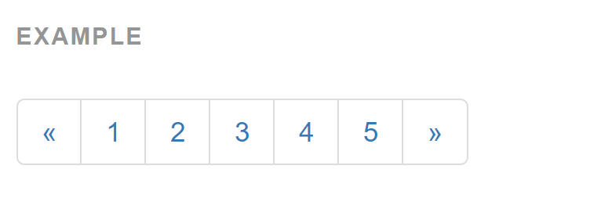
(1) index视图¶
def index(request):
'''
批量导入数据:
Booklist=[]
for i in range(100):
Booklist.append(Book(title="book"+str(i),price=30+i*i))
Book.objects.bulk_create(Booklist)
分页器的使用:
book_list=Book.objects.all()
paginator = Paginator(book_list, 10)
print("count:",paginator.count) #数据总数
print("num_pages",paginator.num_pages) #总页数
print("page_range",paginator.page_range) #页码的列表
page1=paginator.page(1) # 第1页的page对象
for i in page1: # 遍历第1页的所有数据对象
print(i)
print(page1.object_list) #第1页的所有数据
page2=paginator.page(2)
print(page2.has_next()) #是否有下一页
print(page2.next_page_number()) #下一页的页码
print(page2.has_previous()) #是否有上一页
print(page2.previous_page_number()) #上一页的页码
# 抛错
#page=paginator.page(12) # error:EmptyPage
#page=paginator.page("z") # error:PageNotAnInteger
'''
book_list = Book.objects.all()
paginator = Paginator(book_list, 10)
page = request.GET.get('page', 1)
current_page = int(page)
try:
print(page)
book_list = paginator.page(page)
except PageNotAnInteger:
book_list = paginator.page(1)
except EmptyPage:
book_list = paginator.page(paginator.num_pages)
return render(request, "index.html", {"book_list": book_list, "paginator": paginator, "currentPage": current_page})
(2) index.html¶
<!DOCTYPE html>
<html lang="en">
<head>
<meta charset="UTF-8">
<title>Title</title>
<link rel="stylesheet" href="https://cdn.bootcss.com/bootstrap/3.3.7/css/bootstrap.min.css"
integrity="sha384-BVYiiSIFeK1dGmJRAkycuHAHRg32OmUcww7on3RYdg4Va+PmSTsz/K68vbdEjh4u" crossorigin="anonymous">
</head>
<body>
<div class="container">
<h4>分页器</h4>
<ul>
{% for book in book_list %}
<li>{{ book.title }} -----{{ book.price }}</li>
{% endfor %}
</ul>
<ul class="pagination" id="pager">
{% if book_list.has_previous %}
<li class="previous"><a href="/index/?page={{ book_list.previous_page_number }}">上一页</a></li>
{% else %}
<li class="previous disabled"><a href="#">上一页</a></li>
{% endif %}
{% for num in paginator.page_range %}
{% if num == currentPage %}
<li class="item active"><a href="/index/?page={{ num }}">{{ num }}</a></li>
{% else %}
<li class="item"><a href="/index/?page={{ num }}">{{ num }}</a></li>
{% endif %}
{% endfor %}
{% if book_list.has_next %}
<li class="next"><a href="/index/?page={{ book_list.next_page_number }}">下一页</a></li>
{% else %}
<li class="next disabled"><a href="#">下一页</a></li>
{% endif %}
</ul>
</div>
</body>
</html>